pacman::p_load(sf, tidyverse, readxl, MCI, tmap, knitr, kableExtra, httr2)03: Geospatial Analytics for Urban Sustainability
1. Introduction and Study Context
Urban Rail Transit (URT) is central to sustainable urban development. By moving large numbers of people quickly and reliably, it supports transit-oriented development, reduces road congestion and connects residents to jobs, services and education. In Singapore, the Mass Rapid Transit (MRT) system has been the backbone of public transport since 1987. Today it has six lines, more than 140 stations and about 200 km of track, complemented by two Light Rail Transit (LRT) lines of about 28 km (Land Transport Authority [LTA], n.d.). In 2024, the MRT carried an average of 3.41 million rides a day, exceeding pre-pandemic levels for the first time (“Singapore’s MRT, LRT ridership surpasses pre-Covid-19 levels”, 2025).
Expanding the network carries a planning risk. Stations are often built ahead of demand to avoid future disruption and cost, but a station that opens before its catchment has developed incurs operating costs with few riders. Hume station’s structure was built as part of Downtown Line Stage 2, which opened in 2015, but the station was left unfinished because its projected ridership did not justify full construction (“Hume MRT station”, n.d.). It opened only on 28 February 2025 (LTA, 2025). Similarly, Buangkok and Woodleigh stations remained closed when the North East Line opened in 2003, because the areas around them were not yet developed enough to justify their operating costs. They opened in 2006 and 2011 respectively (“Buangkok MRT station”, n.d.; “Woodleigh MRT station”, n.d.). Such decisions depend on estimating a station’s catchment and predicting its ridership before it opens.
Two new lines will add 36 stations by 2030: the Jurong Region Line (JRL, 24 stations) and Phase 1 of the Cross Island Line (CRL, 12 stations). New stations also compete with existing ones. Residents who live between an existing and a new station may switch, so the new lines can reduce ridership at existing stations as well as add their own.
Probabilistic spatial interaction models address this question directly. The Huff model estimates the probability that a resident at a given location uses each station, based on the station’s attractiveness and the distance to it, relative to all competing stations (Huff, 1964). Zhu et al. (2021) applied an improved Huff model to estimate URT station catchments in Xi’an, measuring station attractiveness through walkability, public transport accessibility and service quality. However, they adopted the distance-decay and attractiveness parameters from the literature and from expert ratings rather than calibrating them, and noted this as their main limitation. This exercise calibrates the model parameters against observed station ridership in Singapore, using the Multiplicative Competitive Interaction (MCI) model, the calibratable form of the Huff model (Nakanishi & Cooper, 1974).
Please refer to the Executive Summary for the key analysis and recommendations.
2. Research Objectives and Questions
2.1 Research Objectives
This exercise develops an analytical framework for station-level ridership prediction to:
- Calibrate a probabilistic spatial interaction model for station-level ridership estimation.
- Predict the potential ridership of the proposed JRL and CRL Phase 1 stations.
- Evaluate the potential impact of the new stations on the ridership and market areas of existing stations.
2.2 Research Questions
- RQ1: How well does a calibrated probabilistic spatial interaction model explain the observed weekday morning-peak ridership of existing MRT and LRT stations, and which station attributes matter beyond distance?
- RQ2: What ridership can be expected at the 36 proposed JRL and CRL Phase 1 stations, and which stations are at risk of low ridership?
- RQ3: How will the new stations redistribute the market areas and ridership of existing stations?
2.3 Model Components
| Component | Definition in this exercise | Data |
|---|---|---|
| Origins | Hexagonal grid cells covering mainland Singapore | Created in this exercise |
| Market potential | Residents aged 15-64 in HDB and private housing, June 2026 | SingStat population by subzone, HDB Property Information, HDB Existing Building, MP2019 Land Use |
| Destinations | Existing MRT/LRT stations, and existing plus proposed stations | LTA Train Station, URA Master Plan 2025 Rail Station |
| Observed ridership | Average weekday tap-ins between 7am and 9am, July-September 2026 | LTA Passenger Volume by Origin Destination Train Stations |
| Attractiveness | Candidate station attributes, such as nearby points of interest, bus interchanges and bus stops, the number of lines served, and station type (MRT or LRT) | OpenStreetMap, LTA Bus Stop |
| Distance | Straight-line distance from each hexagon to each station, in metres | Computed in this exercise |
Market potential is defined as HDB residents aged 15 to 64, covering the secondary-school, tertiary and working-age groups that make up most weekday morning-peak MRT trips. Children under 15 are excluded because most travel to nearby primary schools on foot or by school bus. Residents aged 65 and over are excluded because their trips are less concentrated in the morning peak.
3. Getting Started
3.1 Installing R Packages
| Package | Purpose in this exercise |
|---|---|
| sf | Import, reproject, validate and process geospatial data |
| tidyverse | Import CSV files, data cleaning, joins and aggregation |
| readxl | Import the SingStat population workbook (.xlsx) |
| httr2 | Download the passenger volume data from the LTA DataMall API (Section 3.4) |
| MCI | Calibrate the MCI model and compute Huff probabilities |
| tmap (version 4) | Thematic maps |
| knitr, kableExtra | Tables |
p_load() of pacman installs any package that is missing and then loads all of them. The map code in this report uses tmap version 4 syntax (for example, fill = instead of col =), so tmap 4.0 or later is required.
3.2 Project Structure
All file paths in this report are relative to the Quarto project folder, so the code runs on any computer once the data are placed in the same structure:
Take-Home_Ex03/
├── Take-Home_Ex03.qmd
├── data/
│ ├── geospatial/ # boundary, land use, buildings, stations, bus stops, OSM POIs
│ └── aspatial/ # passenger volume CSVs, station codes, HDB properties, population3.3 Datasets
| Dataset | Source | Format | Version / period | Use in this exercise |
|---|---|---|---|---|
| Master Plan 2019 Subzone Boundary (No Sea) | data.gov.sg (URA) | GeoJSON | MP2019 | Study boundary; link to population by subzone |
| Master Plan 2019 Land Use | data.gov.sg (URA) | GeoJSON, 113,213 polygons | MP2019 | Locating residents in private housing |
| HDB Existing Building | data.gov.sg (HDB) | GeoJSON, 13,436 footprints | Updated to 2026 | Locating HDB blocks |
| Master Plan 2025 Rail Station | data.gov.sg (URA) | GeoJSON, 272 polygons | MP2025 | Locations of the proposed JRL and CRL stations |
| Train Station | LTA DataMall | Shapefile, 234 polygons | September 2026 | Locations of existing stations |
| Bus Stop Location | LTA DataMall | Shapefile, 5,205 points | September 2026 | Station attractiveness (bus access) |
| OpenStreetMap points of interest | Geofabrik, Malaysia, Singapore and Brunei extract | Shapefiles: points and polygons | Downloaded in October 2026 | Station attractiveness (nearby activities) |
| Passenger Volume by Origin Destination Train Stations | LTA DataMall API | CSV, one file per month | July-September 2026 | Observed station ridership |
| Train Station Codes and Chinese Names | data.gov.sg | CSV, 184 codes | December 2015 | Linking passenger volume codes to station names |
| HDB Property Information | data.gov.sg (HDB) | CSV, 13,392 blocks | 2025 | Residential flag and dwelling units per block |
| Singapore Residents by Planning Area/Subzone, Age Group, Sex and Type of Dwelling | SingStat | Excel workbook | June 2026 | Market potential (residents aged 15-64) |
3.4 Downloading the Passenger Volume Data
Unlike the other datasets, the passenger volume data cannot be downloaded directly from a web page. It is served through the LTA DataMall API, which requires an Account Key. To reproduce this step, request an Account Key at the LTA DataMall API request page. The key is sent by email.
DataMall only provides the three most recent months. The July to September 2026 files will therefore no longer be available from the API after December 2026.
The key is stored in a .Renviron file in the project folder as LTA_ACCOUNT_KEY=<your key>, and read with Sys.getenv(), so it never appears in the report or on GitHub. .Renviron is listed in .gitignore. The chunk is set to eval: false because the API only serves the three most recent months.
for (m in c("202607", "202608", "202609")) {
resp <- request("https://datamall2.mytransport.sg/ltaodataservice/PV/ODTrain") %>%
req_url_query(Date = m) %>%
req_headers(AccountKey = Sys.getenv("LTA_ACCOUNT_KEY"),
accept = "application/json") %>%
req_perform()
zip_link <- resp_body_json(resp)$value[[1]]$Link
zip_file <- tempfile(fileext = ".zip")
download.file(zip_link, zip_file, mode = "wb")
unzip(zip_file, exdir = "data/aspatial")
}3.5 Importing Geospatial Data
The eight geospatial datasets are imported with st_read(). GeoJSON files are read by file path. Shapefiles are read by folder (dsn) and layer name, because a shapefile consists of several files (.shp, .shx, .dbf, .prj) that must sit together in the same folder.
mpsz_raw <- st_read("data/geospatial/MasterPlan2019SubzoneBoundaryNoSeaGEOJSON.geojson", quiet = TRUE)
landuse_raw <- st_read("data/geospatial/MasterPlan2019LandUselayer.geojson", quiet = TRUE)
hdb_bldg_raw <- st_read("data/geospatial/HDBExistingBuilding.geojson", quiet = TRUE)
mp25_stn_raw <- st_read("data/geospatial/MasterPlan2025RailStationLayer.geojson", quiet = TRUE)
rts_raw <- st_read(dsn = "data/geospatial/RapidTransitSystemStation", layer = "RapidTransitSystemStation", quiet = TRUE)
busstop_raw <- st_read(dsn = "data/geospatial/BusStopLocation_Sep2026", layer = "BusStop", quiet = TRUE)
poi_pt_raw <- st_read(dsn = "data/geospatial/gis_osm_pois", layer = "gis_osm_pois_free_1", quiet = TRUE)
poi_poly_raw <- st_read(dsn = "data/geospatial/gis_osm_pois", layer = "gis_osm_pois_a_free_1", quiet = TRUE)To check all eight layers at once, the code chunk below summarises each layer’s number of features, geometry type, coordinate reference system (CRS) and number of invalid geometries.
NoteAI Use Disclosure
AI tools were used to draft the R code that summarises the eight layers into a single table using imap() and list_rbind(). The output was reviewed and run by the author to verify correctness against the study data.
geo_layers <- list(mpsz_raw = mpsz_raw, landuse_raw = landuse_raw,
hdb_bldg_raw = hdb_bldg_raw, mp25_stn_raw = mp25_stn_raw,
rts_raw = rts_raw, busstop_raw = busstop_raw,
poi_pt_raw = poi_pt_raw, poi_poly_raw = poi_poly_raw)
imap(geo_layers, \(x, name) tibble(
layer = name,
features = nrow(x),
geometry = paste(unique(as.character(st_geometry_type(x))), collapse = ", "),
crs = st_crs(x)$Name,
epsg = st_crs(x)$epsg,
invalid = sum(!st_is_valid(x), na.rm = TRUE)
)) %>%
list_rbind() %>%
kable()| layer | features | geometry | crs | epsg | invalid |
|---|---|---|---|---|---|
| mpsz_raw | 332 | MULTIPOLYGON | WGS 84 | 4326 | 6 |
| landuse_raw | 113213 | MULTIPOLYGON | WGS 84 | 4326 | 3 |
| hdb_bldg_raw | 13436 | MULTIPOLYGON | WGS 84 | 4326 | 4 |
| mp25_stn_raw | 272 | MULTIPOLYGON | WGS 84 | 4326 | 0 |
| rts_raw | 234 | MULTIPOLYGON | SVY21 | NA | 0 |
| busstop_raw | 5205 | POINT | SVY21 | NA | 0 |
| poi_pt_raw | 108841 | POINT | WGS 84 | 4326 | 0 |
| poi_poly_raw | 64468 | MULTIPOLYGON | WGS 84 | 4326 | 0 |
The summary shows three issues that are addressed in Section 4:
- Mixed coordinate systems. The GeoJSON files and the OpenStreetMap files are in WGS 84 (longitude and latitude, in degrees), while the two LTA shapefiles are in SVY21 without an EPSG code. Distances must be measured in metres, so all layers are projected to SVY21 / Singapore TM (EPSG:3414).
- Invalid geometries. A small number of polygons are invalid, for example with self-intersecting outlines: 6 in the subzone boundary, 3 in the land use layer and 4 in the HDB building layer. These can cause spatial joins and overlays to fail or return wrong results.
- OpenStreetMap coverage. The extract covers Malaysia, Singapore and Brunei, so 108,841 points and 64,468 polygons are imported, most of them outside Singapore. They are clipped to the study area when station attractiveness is prepared.
3.6 Importing Aspatial Data
3.6.1 Passenger volume
The three monthly passenger volume files are read together. list.files() finds every file that matches the naming pattern origin_destination_train_YYYYMM.csv, and read_csv() reads and stacks them in one step. The column types are set explicitly so that every month is read the same way, with station codes such as EW24/NS1 kept as text.
od_files <- list.files("data/aspatial",
pattern = "^origin_destination_train_\\d{6}\\.csv$",
full.names = TRUE)
od_files[1] "data/aspatial/origin_destination_train_202607.csv"
[2] "data/aspatial/origin_destination_train_202608.csv"
[3] "data/aspatial/origin_destination_train_202609.csv"od_raw <- read_csv(od_files,
col_types = cols(YEAR_MONTH = col_character(),
DAY_TYPE = col_character(),
TIME_PER_HOUR = col_integer(),
PT_TYPE = col_character(),
ORIGIN_PT_CODE = col_character(),
DESTINATION_PT_CODE = col_character(),
TOTAL_TRIPS = col_double()))
glimpse(od_raw)Rows: 2,702,429
Columns: 7
$ YEAR_MONTH <chr> "2026-07", "2026-07", "2026-07", "2026-07", "2026-…
$ DAY_TYPE <chr> "WEEKENDS/HOLIDAY", "WEEKENDS/HOLIDAY", "WEEKDAY",…
$ TIME_PER_HOUR <int> 8, 14, 20, 19, 17, 11, 7, 9, 16, 5, 15, 16, 20, 17…
$ PT_TYPE <chr> "TRAIN", "TRAIN", "TRAIN", "TRAIN", "TRAIN", "TRAI…
$ ORIGIN_PT_CODE <chr> "EW33", "CE1/DT16", "NE4/DT19", "EW30", "DT30", "D…
$ DESTINATION_PT_CODE <chr> "TE18", "NS23", "SW4", "NS12", "SW4", "NE18", "DT3…
$ TOTAL_TRIPS <dbl> 3, 141, 159, 4, 5, 29, 426, 25, 7, 12, 107, 124, 4…od_raw %>% count(YEAR_MONTH, DAY_TYPE)# A tibble: 6 × 3
YEAR_MONTH DAY_TYPE n
<chr> <chr> <int>
1 2026-07 WEEKDAY 487167
2 2026-07 WEEKENDS/HOLIDAY 420799
3 2026-08 WEEKDAY 471262
4 2026-08 WEEKENDS/HOLIDAY 435723
5 2026-09 WEEKDAY 475395
6 2026-09 WEEKENDS/HOLIDAY 412083The combined data have 2,702,429 rows, each recording the number of trips between one pair of stations in one hour, for weekdays or for weekends and holidays, in each month. TOTAL_TRIPS is the total for the whole month, not a daily figure, so months with more weekdays have larger totals. This is accounted for when the observed ridership is computed.
3.6.2 Train station codes
The passenger volume data identify stations by code only. The station code list links each code to its station name and line. Only the English columns are imported, as the Chinese names are not used in this exercise.
stn_code_raw <- read_csv("data/aspatial/TrainStationChineseNames.csv",
col_select = c(stn_code, mrt_station_english, mrt_line_english),
show_col_types = FALSE)
glimpse(stn_code_raw)Rows: 184
Columns: 3
$ stn_code <chr> "NS1", "NS2", "NS3", "NS4", "NS5", "NS7", "NS8", "…
$ mrt_station_english <chr> "Jurong East", "Bukit Batok", "Bukit Gombak", "Cho…
$ mrt_line_english <chr> "North South Line", "North South Line", "North Sou…3.6.3 HDB Property Information
blk_no is read as text because block numbers can carry a letter suffix, such as 1A. Reading it as a number would turn these into missing values.
hdb_prop_raw <- read_csv("data/aspatial/HDBPropertyInformation.csv",
col_types = cols(blk_no = col_character(), .default = col_guess()))
glimpse(hdb_prop_raw)Rows: 13,392
Columns: 24
$ blk_no <chr> "1", "1", "1", "1", "1", "1", "1", "1", "1", "1"…
$ street <chr> "BEACH RD", "BEDOK STH AVE 1", "CANTONMENT RD", …
$ max_floor_lvl <dbl> 16, 14, 2, 15, 4, 25, 12, 14, 12, 2, 15, 15, 13,…
$ year_completed <dbl> 1970, 1975, 2010, 1982, 1975, 1982, 1975, 1977, …
$ residential <chr> "Y", "Y", "N", "Y", "Y", "Y", "Y", "Y", "Y", "N"…
$ commercial <chr> "Y", "N", "Y", "N", "Y", "N", "N", "N", "Y", "Y"…
$ market_hawker <chr> "N", "N", "N", "N", "N", "N", "N", "N", "N", "N"…
$ miscellaneous <chr> "N", "Y", "N", "N", "N", "N", "Y", "Y", "N", "N"…
$ multistorey_carpark <chr> "N", "N", "N", "N", "N", "N", "N", "N", "N", "N"…
$ precinct_pavilion <chr> "N", "N", "N", "N", "N", "N", "N", "N", "N", "N"…
$ bldg_contract_town <chr> "KWN", "BD", "CT", "BD", "PRC", "BM", "QT", "GL"…
$ total_dwelling_units <dbl> 142, 206, 0, 102, 55, 96, 125, 247, 95, 0, 220, …
$ `1room_sold` <dbl> 0, 0, 0, 0, 0, 0, 0, 0, 0, 0, 0, 0, 0, 0, 0, 0, …
$ `2room_sold` <dbl> 1, 0, 0, 0, 0, 0, 0, 0, 0, 0, 0, 0, 0, 0, 0, 0, …
$ `3room_sold` <dbl> 138, 204, 0, 0, 54, 0, 118, 0, 62, 0, 216, 213, …
$ `4room_sold` <dbl> 1, 0, 0, 10, 0, 0, 0, 0, 0, 0, 0, 0, 0, 0, 0, 0,…
$ `5room_sold` <dbl> 2, 2, 0, 92, 1, 96, 7, 0, 33, 0, 4, 5, 0, 4, 0, …
$ exec_sold <dbl> 0, 0, 0, 0, 0, 0, 0, 0, 0, 0, 0, 0, 0, 0, 0, 0, …
$ multigen_sold <dbl> 0, 0, 0, 0, 0, 0, 0, 0, 0, 0, 0, 0, 0, 0, 0, 0, …
$ studio_apartment_sold <dbl> 0, 0, 0, 0, 0, 0, 0, 0, 0, 0, 0, 0, 0, 0, 0, 0, …
$ `1room_rental` <dbl> 0, 0, 0, 0, 0, 0, 0, 0, 0, 0, 0, 0, 319, 0, 0, 0…
$ `2room_rental` <dbl> 0, 0, 0, 0, 0, 0, 0, 247, 0, 0, 0, 0, 0, 0, 56, …
$ `3room_rental` <dbl> 0, 0, 0, 0, 0, 0, 0, 0, 0, 0, 0, 1, 0, 0, 14, 1,…
$ other_room_rental <dbl> 0, 0, 0, 0, 0, 0, 0, 0, 0, 0, 0, 0, 0, 0, 14, 0,…3.6.4 Population by planning area and subzone
The SingStat workbook has three sheets: total, male and female population. Only 2026(Total) is needed. The sheet starts with a title row and a blank row, so the first two rows are skipped. SingStat uses - to denote nil or negligible values, so na = "-" reads these as missing values, which keeps the population column numeric.
pop_file <- "data/aspatial/Singapore_Residents_by_Planning_Area_Subzone_Jun 2026.xlsx"
excel_sheets(pop_file)[1] "2026(Total)" "2026(Male)" "2026(Female)"pop_raw <- read_excel(pop_file, sheet = "2026(Total)", skip = 2,
col_types = c("text", "text", "text", "text", "numeric"),
na = "-")
glimpse(pop_raw)Rows: 69,848
Columns: 5
$ `Planning Area` <chr> "Total", "Total", "Total", "Total", "Total", "Total…
$ Subzone <chr> "Total", "Total", "Total", "Total", "Total", "Total…
$ `Age Group` <chr> "Total", "Total", "Total", "Total", "Total", "Total…
$ `Type of Dwelling` <chr> "Total", "Total HDB^", "1- and 2-Room Flats*", "3-R…
$ `2026` <dbl> 4231520, 3195130, 205410, 545530, 1364600, 1079600,…tail(pop_raw, 7)# A tibble: 7 × 5
`Planning Area` Subzone `Age Group` `Type of Dwelling` `2026`
<chr> <chr> <chr> <chr> <dbl>
1 "Note:" <NA> <NA> <NA> NA
2 "Planning areas refer to areas … <NA> <NA> <NA> NA
3 "Data from 2003 onwards exclude… <NA> <NA> <NA> NA
4 "\"-\" denotes Nil or negligibl… <NA> <NA> <NA> NA
5 "Data has been rounded to the n… <NA> <NA> <NA> NA
6 "^ Includes non-privatised Hous… <NA> <NA> <NA> NA
7 "* Includes HDB studio apartmen… <NA> <NA> <NA> NAThe last seven rows are footnotes rather than data. They have no Subzone value and are removed when the population data are prepared. The table also mixes subzone rows with “Total” rows for Singapore, for each planning area, for all ages and for all HDB flat types, so those rows must be filtered out to avoid double-counting.
4. Data Wrangling
4.1 CRS Transformation and Geometry Repair
All layers are projected to SVY21 / Singapore TM (EPSG:3414), Singapore’s national projected coordinate system, which measures distance in metres.
The two LTA shapefiles are already in SVY21 coordinates, but their projection file does not carry the EPSG code. Either st_set_crs() (which relabels the CRS without changing the coordinates) or st_transform() (which converts the coordinates) could be used. Before choosing, the two results were compared:
max(abs(st_coordinates(st_set_crs(rts_raw, 3414))[, 1:2] -
st_coordinates(st_transform(rts_raw, 3414))[, 1:2]))[1] 0The largest difference is 0 m, confirming that the shapefiles’ SVY21 definition is identical to EPSG:3414. st_transform() is therefore used for every layer.
Invalid geometries in the land use and HDB building layers are repaired with st_make_valid(). The repair is done after projecting, because converting coordinates can itself make a small number of polygons invalid: when the repair was done first, two land use polygons were invalid again after projection. The subzone boundary is processed separately in Section 4.2.
landuse <- landuse_raw %>% st_transform(3414) %>% st_make_valid()
hdb_bldg <- hdb_bldg_raw %>% st_transform(3414) %>% st_make_valid()
mp25_stn <- mp25_stn_raw %>% st_transform(3414)
rts <- rts_raw %>% st_transform(3414)
busstop <- busstop_raw %>% st_transform(3414)
poi_pt <- poi_pt_raw %>% st_transform(3414)
poi_poly <- poi_poly_raw %>% st_transform(3414)
c(landuse = sum(!st_is_valid(landuse)), hdb_bldg = sum(!st_is_valid(hdb_bldg))) landuse hdb_bldg
0 0 After projection and repair, both layers have no invalid geometries, so they can be used safely in spatial joins and overlays.
4.2 Preparing the Subzone Boundary
The subzone boundary is used both to define the study area and to link the SingStat population data to locations, so its subzone names must match the population table exactly.
data.gov.sg has distributed this file in two formats. In one, the attributes are ordinary columns (SUBZONE_N, PLN_AREA_N and so on). In the other, all attributes are packed into an HTML table in a single Description column. names() shows which format was downloaded:
names(mpsz_raw) [1] "OBJECTID" "SUBZONE_NO" "SUBZONE_N" "SUBZONE_C" "CA_IND"
[6] "PLN_AREA_N" "PLN_AREA_C" "REGION_N" "REGION_C" "INC_CRC"
[11] "FMEL_UPD_D" "SHAPE.AREA" "SHAPE.LEN" "geometry" If the attributes sit inside Description, the code below extracts each one with a regular expression, which captures the text between <th>FIELD</th><td> and </td>. If they are already columns, this step is skipped.
NoteAI Use Disclosure
AI tools were used to draft the regular expression that extracts subzone attributes from the HTML in the Description column. The output was reviewed and run by the author to verify correctness against the study data.
if (!"SUBZONE_N" %in% names(mpsz_raw)) {
get_attr <- function(html, field) {
str_match(html, paste0("<th>", field, "</th>\\s*<td>(.*?)</td>"))[, 2]
}
for (field in c("SUBZONE_N", "SUBZONE_C", "PLN_AREA_N",
"PLN_AREA_C", "REGION_N", "REGION_C")) {
mpsz_raw[[field]] <- get_attr(mpsz_raw$Description, field)
}
}The boundary is then cleaned:
- select() keeps the subzone, planning area and region names and codes.
- st_transform() projects to EPSG:3414, and st_make_valid() then repairs invalid polygons.
- Names are converted to upper case and extra spaces removed with str_to_upper() and str_squish(), so that they can be matched reliably with the population table.
mpsz <- mpsz_raw %>%
select(SUBZONE_N, SUBZONE_C, PLN_AREA_N, PLN_AREA_C, REGION_N, REGION_C) %>%
st_transform(3414) %>%
st_make_valid() %>%
mutate(across(c(SUBZONE_N, PLN_AREA_N, REGION_N),
\(x) str_squish(str_to_upper(x))))
tibble(subzones = nrow(mpsz),
duplicate_code = sum(duplicated(mpsz$SUBZONE_C)),
missing_name = sum(is.na(mpsz$SUBZONE_N)),
invalid = sum(!st_is_valid(mpsz)))# A tibble: 1 × 4
subzones duplicate_code missing_name invalid
<int> <int> <int> <int>
1 332 0 0 0Next, the subzones in the boundary are compared with those in the population table. Planning area and subzone are matched together. anti_join() returns the rows of one table that have no match in the other, so both directions are checked.
pop_subzones <- pop_raw %>%
filter(!is.na(Subzone), `Planning Area` != "Total", Subzone != "Total") %>%
distinct(PLN_AREA_N = str_squish(str_to_upper(`Planning Area`)),
SUBZONE_N = str_squish(str_to_upper(Subzone)))
nrow(pop_subzones)[1] 332anti_join(pop_subzones, st_drop_geometry(mpsz), by = c("PLN_AREA_N", "SUBZONE_N"))# A tibble: 0 × 2
# ℹ 2 variables: PLN_AREA_N <chr>, SUBZONE_N <chr>anti_join(st_drop_geometry(mpsz), pop_subzones, by = c("PLN_AREA_N", "SUBZONE_N")) %>%
select(PLN_AREA_N, SUBZONE_N)[1] PLN_AREA_N SUBZONE_N
<0 rows> (or 0-length row.names)Both checks return no rows, so all 332 subzones in the population table match the boundary.
This is why the Master Plan 2019 boundary is used rather than the Master Plan 2014 boundary. The SingStat 2026 population figures are published for the 2019 subzones. When the same check was run against the 2014 boundary, 12 subzones in the population table had no match, including the Tengah subzones of Brickland, Forest Hill, Garden, Park and Plantation. Tengah is the core catchment of the JRL, so its residents would have been lost.
4.3 Preparing the Study Boundary
The study area is mainland Singapore. Offshore islands are excluded because they have no HDB flats and no MRT or LRT stations, and therefore neither market potential nor destinations.
Excluding islands needs care. Jurong Island and Sentosa are joined to the mainland by causeways, so in the boundary file their polygons touch the mainland. Keeping only the largest piece of land would therefore still include them. Instead, the study area is built in three steps:
The three planning areas that consist of offshore islands are removed: Western Islands (including Jurong Island), Southern Islands (including Sentosa) and North-Eastern Islands (Pulau Ubin and Pulau Tekong).
The remaining subzones are merged with st_union() and split into separate pieces of land with st_cast(“POLYGON”). The largest piece is mainland Singapore. Smaller islands that belong to mainland planning areas, such as Pulau Seletar, are dropped at this step.
Merging adjacent subzones can leave small gaps along shared borders, which appear as holes in the merged polygon. These are slivers rather than real features, so the holes are filled by keeping only the polygon’s outer ring.
island_pa <- c("WESTERN ISLANDS", "SOUTHERN ISLANDS", "NORTH-EASTERN ISLANDS")
mpsz %>% st_drop_geometry() %>%
filter(PLN_AREA_N %in% island_pa) %>%
select(PLN_AREA_N, SUBZONE_N) PLN_AREA_N SUBZONE_N
1 WESTERN ISLANDS JURONG ISLAND AND BUKOM
2 WESTERN ISLANDS SUDONG
3 WESTERN ISLANDS SEMAKAU
4 SOUTHERN ISLANDS SOUTHERN GROUP
5 SOUTHERN ISLANDS SENTOSA
6 NORTH-EASTERN ISLANDS NORTH-EASTERN ISLANDSsg_parts <- mpsz %>%
filter(!PLN_AREA_N %in% island_pa) %>%
st_union() %>%
st_cast("POLYGON") %>%
st_sf(geometry = .) %>%
mutate(area_km2 = as.numeric(st_area(geometry)) / 1e6) %>%
arrange(desc(area_km2))
head(sg_parts$area_km2)[1] 6.629136e+02 1.611279e+00 2.800020e-02 1.503148e-02 1.496630e-02
[6] 8.187501e-03The largest piece is far bigger than the rest, confirming that it is the mainland.
NoteAI Use Disclosure
AI tools were used to draft the R code that keeps only the outer ring of the mainland polygon to fill sliver holes, using st_polygon() on the first ring of the geometry. The output was reviewed and run by the author to verify correctness against the study data.
mainland <- slice_max(sg_parts, area_km2, n = 1)
length(st_geometry(mainland)[[1]]) # number of rings: 1 outer ring + holes[1] 30study_area <- st_sf(study = "Mainland Singapore",
geometry = st_sfc(st_polygon(st_geometry(mainland)[[1]][1]),
crs = 3414))
as.numeric(st_area(study_area)) / 1e6 # study area in km²[1] 663.014The island planning areas are removed first, and the remaining subzones are then clipped to the study area with st_intersection(). Removing the island planning areas explicitly matters because, in the boundary file, Sentosa’s polygon slightly overlaps the mainland outline near the causeway, so clipping alone would keep a thin sliver of it.
mpsz_study <- mpsz %>%
filter(!PLN_AREA_N %in% island_pa) %>%
st_intersection(study_area) %>%
st_collection_extract("POLYGON") %>%
group_by(SUBZONE_N, SUBZONE_C, PLN_AREA_N, PLN_AREA_C, REGION_N, REGION_C) %>%
summarise(.groups = "drop")
nrow(mpsz_study)[1] 325mpsz %>% st_drop_geometry() %>%
anti_join(st_drop_geometry(mpsz_study), by = "SUBZONE_C") %>%
select(PLN_AREA_N, SUBZONE_N) PLN_AREA_N SUBZONE_N
1 WESTERN ISLANDS JURONG ISLAND AND BUKOM
2 WESTERN ISLANDS SUDONG
3 WESTERN ISLANDS SEMAKAU
4 SOUTHERN ISLANDS SOUTHERN GROUP
5 SOUTHERN ISLANDS SENTOSA
6 SIMPANG PULAU SELETAR
7 NORTH-EASTERN ISLANDS NORTH-EASTERN ISLANDSTo confirm that excluding the islands removes no relevant data, each layer is checked for features that fall outside the study area. For polygons, st_point_on_surface() gives a point that is guaranteed to lie inside each polygon, and that point is tested against the study area.
count_outside <- function(x) {
sum(lengths(st_intersects(st_point_on_surface(st_geometry(x)), study_area)) == 0)
}
tibble(layer = c("HDB buildings", "LTA stations", "MP2025 stations", "Bus stops"),
total = c(nrow(hdb_bldg), nrow(rts), nrow(mp25_stn), nrow(busstop)),
outside = c(count_outside(hdb_bldg), count_outside(rts),
count_outside(mp25_stn), count_outside(busstop)))# A tibble: 4 × 3
layer total outside
<chr> <int> <int>
1 HDB buildings 13436 0
2 LTA stations 234 0
3 MP2025 stations 272 3
4 Bus stops 5205 8mp25_stn$NAME[lengths(st_intersects(st_point_on_surface(st_geometry(mp25_stn)), study_area)) == 0][1] "RESORTS WORLD" "IMBIAH" "BEACH" busstop %>% st_drop_geometry() %>%
filter(lengths(st_intersects(busstop, study_area)) == 0) %>%
select(BUS_STOP_N, LOC_DESC) BUS_STOP_N LOC_DESC
1 47711 JB Sentral Bus Ter
2 46211 Johor Bahru Checkpt
3 46219 Johor Bahru Checkpt
4 46239 Larkin Ter
5 14519 Resorts World Sentosa
6 14521 Village Hotel
7 14529 Opp Village Hotel
8 14539 Beach Stn TerThe check confirms the choice of study area:
- No HDB buildings and no LTA stations lie outside it. No residents or existing stations are lost.
- The three Master Plan 2025 stations outside it are Resorts World, Imbiah and Beach. These are Sentosa Express monorail stations, which are not part of the MRT/LRT network and do not appear in the passenger volume data.
- The eight bus stops outside it are four in Johor Bahru and four on Sentosa. The Johor Bahru stops (JB Sentral, Larkin Terminal and Johor Bahru Checkpoint) serve cross-border bus routes and do not lie in Singapore.
4.4 Plotting the Study Boundary
The map below shows the study area in blue, with subzone boundaries in white, and the excluded offshore islands in grey.
tmap_mode("plot")
tm_shape(mpsz) +
tm_polygons(fill = "grey85", col = "white", lwd = 0.3) +
tm_shape(mpsz_study) +
tm_polygons(fill = "#9ecae1", col = "white", lwd = 0.3) +
tm_shape(study_area) +
tm_borders(col = "grey20", lwd = 1.2) +
tm_add_legend(type = "polygons",
labels = c("Study area (mainland)", "Excluded (offshore islands)"),
fill = c("#9ecae1", "grey85"), col = "white") +
tm_title("Study area: mainland Singapore") +
tm_compass(type = "8star", size = 2, position = c("right", "top")) +
tm_scalebar(position = c("left", "bottom")) +
tm_layout(frame = TRUE, legend.position = c("right", "bottom"))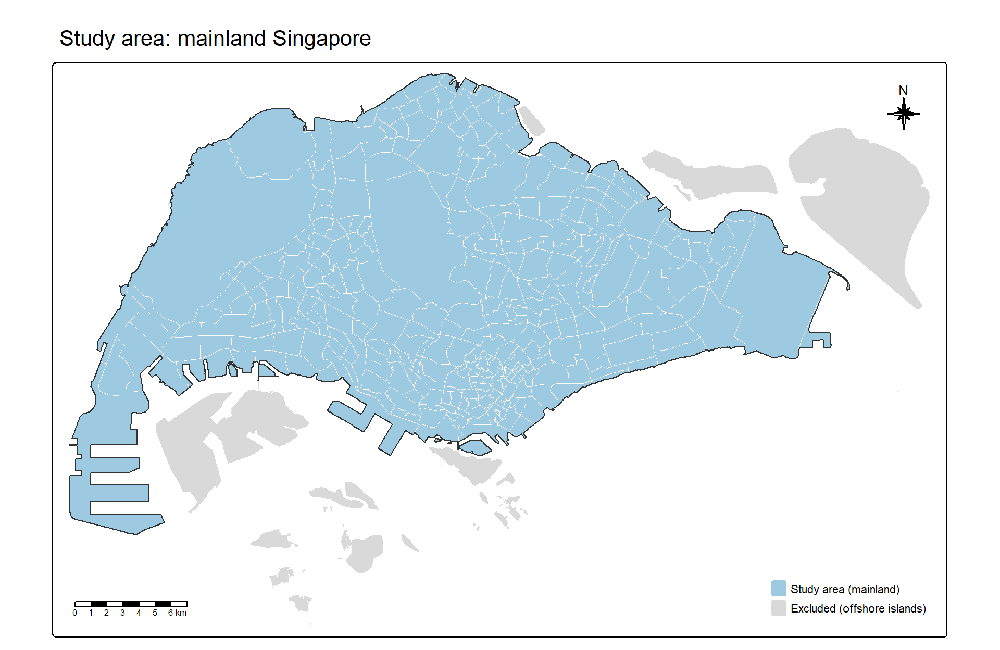
4.5 Plotting Existing and Upcoming Stations
Existing stations are taken from the LTA Train Station layer. A station is treated as existing if at least one of its codes appears in the July-September 2026 passenger volume data, i.e. it recorded tap-ins or tap-outs. This removes depots and stations that are built but not yet open. Interchange codes in both datasets combine several lines (e.g. EW24 / NS1 and EW24/NS1), so they are split into individual codes with str_split() before matching.
od_codes <- unique(c(od_raw$ORIGIN_PT_CODE, od_raw$DESTINATION_PT_CODE)) %>%
str_split("/") %>% unlist() %>% str_squish() %>% unique()
stn_existing <- rts %>%
filter(map_lgl(str_split(STN_NAM, "/"), \(x) any(str_squish(x) %in% od_codes))) %>%
group_by(STN_NAM) %>%
summarise(.groups = "drop") %>%
st_point_on_surface()
nrow(stn_existing)[1] 206# LTA records with no passenger data
rts %>% st_drop_geometry() %>% distinct(STN_NAM) %>%
filter(!map_lgl(str_split(STN_NAM, "/"), \(x) any(str_squish(x) %in% od_codes))) %>%
pull(STN_NAM) [1] "SMD" "BPLD" "UPD" "MD" "TE22A" "TD" "SLD"
[8] "TSCDTFB" "TSFB" "TE10" "KCD" "ST" "HSSCT" "CD"
[15] "BOCC" "GBD" "BD" "CC18" "TE21" # Passenger volume codes with no polygon of their own in the LTA layer
setdiff(od_codes, str_squish(unlist(str_split(rts$STN_NAM, "/"))))[1] "TE9" "CC34" "TE20" "TE14" "TE17" "TE11" "NE1" "CC33"The LTA layer contains 19 records with no passenger data:
- 15 depots and operational facilities, such as
BD,KCDandTSFB. - Four stations that are built but not open: Bukit Brown (
CC18), Mount Pleasant (TE10), Marina South (TE21) and Founders’ Memorial (TE22A).
Eight passenger volume codes have no polygon of their own in the LTA layer, for example TE14 (Orchard) and NE1 (HarbourFront). These are not missing stations. Each is an interchange whose polygon is filed under the other line’s code (NS22, CC29), so the station is still matched through that code.
There are 206 existing station records. Some interchanges are drawn once per line, so the same station can appear more than once at this stage. They are merged into one destination per station when the destination table is prepared.
Upcoming stations are the 24 JRL and 12 CRL Phase 1 stations, taken from the Master Plan 2025 Rail Station layer. That layer has no line or opening-status attribute, so the stations are selected by name. Seven of the 36 are existing stations that will gain a new line: Choa Chu Kang, Boon Lay and Jurong East on the JRL, and Pasir Ris, Hougang, Ang Mo Kio and Bright Hill on the CRL. They are shown separately from the 29 entirely new station sites.
jrl <- c("CHOA CHU KANG", "CHOA CHU KANG WEST", "TENGAH", "HONG KAH", "CORPORATION",
"JURONG WEST", "BAHAR JUNCTION", "BOON LAY INTERCHANGE", "ENTERPRISE", "TUKANG",
"JURONG HILL", "JURONG PIER", "GEK POH", "TAWAS", "NANYANG GATEWAY",
"NANYANG CRESCENT", "PENG KANG HILL", "TENGAH PLANTATION", "TENGAH PARK",
"BUKIT BATOK WEST", "TOH GUAN", "JURONG EAST INTERCHANGE", "JURONG TOWN HALL",
"PANDAN RESERVOIR")
crl <- c("AVIATION PARK", "LOYANG", "PASIR RIS EAST", "PASIR RIS INTERCHANGE",
"TAMPINES NORTH", "DEFU", "HOUGANG INTERCHANGE", "SERANGOON NORTH",
"TAVISTOCK", "ANG MO KIO INTERCHANGE", "TECK GHEE", "BRIGHT HILL INTERCHANGE")
interchange <- c("CHOA CHU KANG", "BOON LAY INTERCHANGE", "JURONG EAST INTERCHANGE",
"PASIR RIS INTERCHANGE", "HOUGANG INTERCHANGE",
"ANG MO KIO INTERCHANGE", "BRIGHT HILL INTERCHANGE")
stn_upcoming <- mp25_stn %>%
mutate(NAME = str_squish(NAME)) %>% # some names carry trailing spaces
filter(NAME %in% c(jrl, crl)) %>%
group_by(NAME) %>%
summarise(.groups = "drop") %>%
mutate(line = if_else(NAME %in% jrl, "Jurong Region Line", "Cross Island Line"),
type = if_else(NAME %in% interchange, "Interchange", "New station")) %>%
st_point_on_surface()
stn_upcoming %>% st_drop_geometry() %>% count(line, type)# A tibble: 4 × 3
line type n
<chr> <chr> <int>
1 Cross Island Line Interchange 4
2 Cross Island Line New station 8
3 Jurong Region Line Interchange 3
4 Jurong Region Line New station 21stn_new <- stn_upcoming %>% filter(type == "New station")
stn_interchange <- stn_upcoming %>% filter(type == "Interchange")
# Distance from each interchange to the nearest existing station
d <- st_distance(stn_interchange, stn_existing)
tibble(station = stn_interchange$NAME,
nearest_existing = stn_existing$STN_NAM[apply(d, 1, which.min)],
distance_m = round(apply(d, 1, min)))# A tibble: 7 × 3
station nearest_existing distance_m
<chr> <chr> <dbl>
1 ANG MO KIO INTERCHANGE NS16 275
2 BOON LAY INTERCHANGE EW27 1
3 BRIGHT HILL INTERCHANGE TE7 451
4 CHOA CHU KANG NS4 36
5 HOUGANG INTERCHANGE NE14 138
6 JURONG EAST INTERCHANGE EW24 / NS1 17
7 PASIR RIS INTERCHANGE EW1 16Five of the seven interchanges lie within 140 m of the existing station. Ang Mo Kio (275 m) and Bright Hill (451 m) lie further away. The reason is that the Master Plan 2025 layer draws each line’s platforms as a separate polygon, and merging these places the representative point between them. For modelling, each interchange therefore keeps its existing station location, and the new line is reflected in its attractiveness rather than as a separate destination.
The map below shows the existing stations, the seven interchanges and the 29 new stations.
tmap_mode("plot")
tm_shape(mpsz_study) +
tm_polygons(fill = "grey95", col = "grey70", lwd = 0.5, fill_alpha = 0.4) +
tm_shape(stn_existing) +
tm_symbols(fill = "grey40", col = "black", size = 0.4) +
tm_shape(stn_interchange) +
tm_symbols(fill = "gold", col = "black", size = 0.8) +
tm_shape(stn_new) +
tm_symbols(fill = "line",
fill.scale = tm_scale_categorical(values = c("#e41a1c", "#377eb8")),
fill.legend = tm_legend(title = "Upcoming stations"),
col = "white", size = 0.7) +
tm_add_legend(type = "symbols",
labels = c("Existing station", "Existing station gaining a JRL/CRL interchange"),
fill = c("grey40", "gold"), col = "black",
title = "Existing network") +
tm_title("Existing and upcoming MRT/LRT stations") +
tm_compass(type = "8star", size = 2, position = c("right", "top")) +
tm_scalebar(position = c("left", "bottom"))
4.6 Preparing the Destinations
The destinations are the stations that residents can choose. Two destination tables are needed: one for the existing network, with observed ridership, and one for the future network, which adds the upcoming JRL and CRL stations. Each table must have one row per station, so interchange stations, which carry several codes, have to be merged into a single destination.
4.6.1 Completing the station code list
The LTA station code list was last updated before the Thomson-East Coast Line opened, so it has no TE codes. It also lacks Canberra (NS12), Hume (DT4), Punggol Coast (NE18) and the Circle Line Stage 6 codes (CC30 to CC34), which first appear in the July 2026 passenger data. The 35 missing codes are added below. Codes for stations that are built but not yet open, Mount Pleasant (TE10), Marina South (TE21) and Founders’ Memorial (TE22A), are not added, as they have no passengers.
stn_code_extra <- tribble(
~stn_code, ~mrt_station_english, ~mrt_line_english,
"NS12", "Canberra", "North South Line",
"NE18", "Punggol Coast", "North East Line",
"DT4", "Hume", "Downtown Line",
"CC30", "Keppel", "Circle Line",
"CC31", "Cantonment", "Circle Line",
"CC32", "Prince Edward Road", "Circle Line",
"CC33", "Marina Bay", "Circle Line",
"CC34", "Bayfront", "Circle Line",
"TE1", "Woodlands North", "Thomson-East Coast Line",
"TE2", "Woodlands", "Thomson-East Coast Line",
"TE3", "Woodlands South", "Thomson-East Coast Line",
"TE4", "Springleaf", "Thomson-East Coast Line",
"TE5", "Lentor", "Thomson-East Coast Line",
"TE6", "Mayflower", "Thomson-East Coast Line",
"TE7", "Bright Hill", "Thomson-East Coast Line",
"TE8", "Upper Thomson", "Thomson-East Coast Line",
"TE9", "Caldecott", "Thomson-East Coast Line",
"TE11", "Stevens", "Thomson-East Coast Line",
"TE12", "Napier", "Thomson-East Coast Line",
"TE13", "Orchard Boulevard", "Thomson-East Coast Line",
"TE14", "Orchard", "Thomson-East Coast Line",
"TE15", "Great World", "Thomson-East Coast Line",
"TE16", "Havelock", "Thomson-East Coast Line",
"TE17", "Outram Park", "Thomson-East Coast Line",
"TE18", "Maxwell", "Thomson-East Coast Line",
"TE19", "Shenton Way", "Thomson-East Coast Line",
"TE20", "Marina Bay", "Thomson-East Coast Line",
"TE22", "Gardens by the Bay", "Thomson-East Coast Line",
"TE23", "Tanjong Rhu", "Thomson-East Coast Line",
"TE24", "Katong Park", "Thomson-East Coast Line",
"TE25", "Tanjong Katong", "Thomson-East Coast Line",
"TE26", "Marine Parade", "Thomson-East Coast Line",
"TE27", "Marine Terrace", "Thomson-East Coast Line",
"TE28", "Siglap", "Thomson-East Coast Line",
"TE29", "Bayshore", "Thomson-East Coast Line"
)
stn_codes <- bind_rows(stn_code_raw, stn_code_extra) %>%
mutate(stn_code = str_squish(stn_code),
station = str_to_upper(str_squish(mrt_station_english)))
sum(duplicated(stn_codes$stn_code))[1] 04.6.2 Linking passenger volume codes to stations
In the passenger data, an interchange is recorded under a combined code such as NS24/NE6/CC1. Each combined code is split into its individual codes, and each code is matched to a station name. Three checks follow:
- Every individual code has a station name.
- All the codes in a combined code belong to the same station.
- Stations recorded under more than one code are listed, as these must be merged.
od_code_map <- tibble(pt_code = unique(c(od_raw$ORIGIN_PT_CODE,
od_raw$DESTINATION_PT_CODE))) %>%
mutate(stn_code = str_split(pt_code, "/")) %>%
unnest(stn_code) %>%
mutate(stn_code = str_squish(stn_code)) %>%
left_join(stn_codes %>% select(stn_code, station), by = "stn_code")
od_code_map %>% filter(is.na(station)) # check 1# A tibble: 0 × 3
# ℹ 3 variables: pt_code <chr>, stn_code <chr>, station <chr>od_code_map %>% # check 2
group_by(pt_code) %>%
summarise(n_station = n_distinct(station)) %>%
filter(n_station != 1)# A tibble: 0 × 2
# ℹ 2 variables: pt_code <chr>, n_station <int>pt_lookup <- od_code_map %>% distinct(pt_code, station)
pt_lookup %>% group_by(station) %>% filter(n() > 1) %>% arrange(station) # check 3# A tibble: 6 × 2
# Groups: station [3]
pt_code station
<chr> <chr>
1 CE1/DT16 BAYFRONT
2 CC34/DT16 BAYFRONT
3 NS27/CE2/TE20 MARINA BAY
4 NS27/CC33/TE20 MARINA BAY
5 DT10 STEVENS
6 TE11 STEVENS The first two checks return no rows. The third finds three stations recorded under two codes:
- Bayfront and Marina Bay were renumbered when Circle Line Stage 6 opened in July 2026 (
CE1/DT16becameCC34/DT16, andNS27/CE2/TE20becameNS27/CC33/TE20). - Stevens is recorded separately for the Downtown Line (
DT10) and the Thomson-East Coast Line (TE11).
Because ridership is aggregated by station rather than by code, these are merged automatically.
4.6.3 Observed ridership
Observed ridership is defined as the average number of tap-ins per weekday between 7am and 9am (TIME_PER_HOUR 7 and 8). Morning-peak tap-ins are used because most morning trips start near home, which matches residential population as the origin of the model.
TOTAL_TRIPS is a monthly total, so it is divided by the number of weekdays in the month. seq() lists every day of the month, wday() identifies Monday to Friday, and public holidays are removed. The only public holiday in the three months is the National Day holiday on Monday 10 August 2026. 9 August fell on a Sunday, so the holiday was observed on the Monday.
NoteAI Use Disclosure
AI tools were used to draft the R code that counts the weekdays in each month using seq(), ym() and wday(). The output was reviewed and run by the author to verify correctness against the study data.
public_holidays <- ymd("2026-08-10")
weekdays_in_month <- tibble(YEAR_MONTH = sort(unique(od_raw$YEAR_MONTH))) %>%
mutate(weekdays = map_int(YEAR_MONTH, \(m) {
days <- seq(ym(m), ym(m) + months(1) - days(1), by = "day")
sum(wday(days, week_start = 1) <= 5 & !days %in% public_holidays)
}))
weekdays_in_month# A tibble: 3 × 2
YEAR_MONTH weekdays
<chr> <int>
1 2026-07 23
2 2026-08 20
3 2026-09 22od_raw %>%
filter(DAY_TYPE == "WEEKDAY") %>%
group_by(YEAR_MONTH) %>%
summarise(monthly_trips = sum(TOTAL_TRIPS)) %>%
left_join(weekdays_in_month, by = "YEAR_MONTH") %>%
mutate(trips_per_weekday = round(monthly_trips / weekdays))# A tibble: 3 × 4
YEAR_MONTH monthly_trips weekdays trips_per_weekday
<chr> <dbl> <int> <dbl>
1 2026-07 71294509 23 3099761
2 2026-08 62846359 20 3142318
3 2026-09 66784543 22 3035661July, August and September have 23, 20 and 22 weekdays. Once each monthly total is divided by these, every month carries about 3.0 to 3.1 million trips per weekday, which confirms the weekday counts. Without the adjustment, July would appear 13% busier than August.
am_tapins <- od_raw %>%
filter(DAY_TYPE == "WEEKDAY", TIME_PER_HOUR %in% c(7, 8)) %>%
left_join(pt_lookup, by = c("ORIGIN_PT_CODE" = "pt_code")) %>%
group_by(YEAR_MONTH, station) %>%
summarise(trips = sum(TOTAL_TRIPS), .groups = "drop") %>%
left_join(weekdays_in_month, by = "YEAR_MONTH") %>%
mutate(daily_tapins = trips / weekdays)
am_tapins %>%
select(station, YEAR_MONTH, daily_tapins) %>%
pivot_wider(names_from = YEAR_MONTH, values_from = daily_tapins) %>%
mutate(change_jul_sep = `2026-09` / `2026-07` - 1) %>%
arrange(desc(abs(change_jul_sep))) %>%
head(8)# A tibble: 8 × 5
station `2026-07` `2026-08` `2026-09` change_jul_sep
<chr> <dbl> <dbl> <dbl> <dbl>
1 PRINCE EDWARD ROAD 56.4 115. 137 1.43
2 KEPPEL 22 41.4 40.9 0.860
3 CANTONMENT 278. 474 480. 0.723
4 MARINA SOUTH PIER 312. 267 244. -0.218
5 TECK LEE 5.13 6.85 6.23 0.214
6 PHOENIX 555. 526. 471. -0.152
7 HOLLAND VILLAGE 1183. 1313. 1356. 0.147
8 GREAT WORLD 1379. 1572. 1569. 0.137Most stations change little across the three months. The three new Circle Line stations are the exception: Prince Edward Road, Keppel and Cantonment rise by 72% to 143% between July and September as ridership builds up after opening. For these three stations, September alone is used as the most representative month. For all other stations, the three months are averaged.
ccl6 <- c("KEPPEL", "CANTONMENT", "PRINCE EDWARD ROAD")
ridership <- am_tapins %>%
filter(!station %in% ccl6 | YEAR_MONTH == "2026-09") %>%
group_by(station) %>%
summarise(am_tapins = mean(daily_tapins), .groups = "drop")
nrow(ridership)[1] 184summary(ridership$am_tapins) Min. 1st Qu. Median Mean 3rd Qu. Max.
6.069 777.277 1450.916 3105.131 3910.178 14990.968 ridership %>% arrange(am_tapins) %>% slice(c(1:5, (n() - 4):n()))# A tibble: 10 × 2
station am_tapins
<chr> <dbl>
1 TECK LEE 6.07
2 GARDENS BY THE BAY 33.9
3 KEPPEL 40.9
4 SAM KEE 79.0
5 RENJONG 105.
6 TAMPINES 13798.
7 BUKIT PANJANG 13821.
8 ADMIRALTY 13896.
9 WOODLANDS 13974.
10 YISHUN 14991. There are 184 existing stations. None has zero or missing ridership, so the observed values can be used directly in the model.
4.6.4 Lines served and station type
The number of lines at a station is a candidate attractiveness variable, since an interchange offers more destinations without a transfer. Each code prefix is assigned to a line. CG (Changi Airport branch) is counted as part of the East-West Line, and CE (Circle Line Extension) as part of the Circle Line. A station is classed as LRT only if all its codes are LRT codes.
line_of <- function(code) {
case_when(
str_detect(code, "^NS") ~ "NSL",
str_detect(code, "^(EW|CG)") ~ "EWL",
str_detect(code, "^NE") ~ "NEL",
str_detect(code, "^(CC|CE)") ~ "CCL",
str_detect(code, "^DT") ~ "DTL",
str_detect(code, "^TE") ~ "TEL",
str_detect(code, "^BP") ~ "BPLRT",
str_detect(code, "^(STC|SE|SW)") ~ "SKLRT",
str_detect(code, "^(PTC|PE|PW)") ~ "PGLRT"
)
}
stn_lines <- od_code_map %>%
mutate(line = line_of(stn_code)) %>%
group_by(station) %>%
summarise(lines = paste(sort(unique(line)), collapse = ", "),
n_lines = n_distinct(line),
mode = if_else(all(str_detect(line, "LRT")), "LRT", "MRT"),
.groups = "drop")
stn_lines %>% count(mode, n_lines)# A tibble: 4 × 3
mode n_lines n
<chr> <int> <int>
1 LRT 1 38
2 MRT 1 117
3 MRT 2 26
4 MRT 3 3Of the 184 stations, 38 are LRT stations. Among the MRT stations, 26 serve two lines and three serve three: Dhoby Ghaut, Outram Park and Marina Bay.
LRT stations are kept as destinations. Residents of Sengkang, Punggol and Bukit Panjang often start their journey at an LRT station, and their tap-in is recorded there rather than at the MRT interchange. Excluding LRT stations would wrongly assign these residents to the interchange.
4.6.5 Station locations
Each station’s location is taken from the LTA Train Station layer. That layer’s station codes are split in the same way and matched to station names. All polygons belonging to a station, such as one platform polygon per line, are merged with summarise(). st_point_on_surface() then gives one point inside the merged station footprint.
rts_loc <- rts %>%
mutate(stn_code = str_split(STN_NAM, "/")) %>%
unnest(stn_code) %>%
st_as_sf() %>%
mutate(stn_code = str_squish(stn_code)) %>%
inner_join(stn_codes %>% select(stn_code, station), by = "stn_code") %>%
group_by(station) %>%
summarise(.groups = "drop") %>%
st_point_on_surface()
dest_existing <- ridership %>%
left_join(stn_lines, by = "station") %>%
left_join(rts_loc, by = "station") %>%
st_as_sf()
c(stations = nrow(dest_existing), without_location = sum(st_is_empty(dest_existing))) stations without_location
184 0 All 184 stations have a location. As an independent check of the code-to-name matching, including the 35 codes added manually, each station is compared with the nearest station in the Master Plan 2025 layer. That layer comes from a different agency (URA) and names stations rather than coding them. The nearest station should carry the same name.
mp25_pts <- mp25_stn %>%
mutate(mp25_name = str_remove(str_squish(NAME), " INTERCHANGE$")) %>%
st_point_on_surface()
nn <- st_nearest_feature(dest_existing, mp25_pts)
dest_existing %>%
mutate(mp25_name = mp25_pts$mp25_name[nn],
dist_m = as.numeric(st_distance(geometry, mp25_pts[nn, ], by_element = TRUE))) %>%
st_drop_geometry() %>%
filter(station != mp25_name) %>%
select(station, mp25_name, dist_m)# A tibble: 4 × 3
station mp25_name dist_m
<chr> <chr> <dbl>
1 FORT CANNING RIVER VALLEY 11.2
2 GARDENS BY THE BAY GARDEN BY THE BAY 11.3
3 JELAPANG JELEPANG 5.00
4 ONE-NORTH ONE NORTH 0.000000123Only four of 184 stations differ, and all lie within 12 m of the matching Master Plan 2025 station:
- Three are spelling variants in the Master Plan 2025 layer:
GARDEN BY THE BAY,JELEPANGandONE NORTH. - One is a different label for the same station: the Master Plan 2025 polygon at Fort Canning is labelled
RIVER VALLEY.
The code-to-name matching is therefore correct.
4.6.6 Future network
The future network adds the upcoming stations prepared in Section 4.5:
- 29 new stations, each served by one line.
- 7 interchanges at existing stations: Choa Chu Kang, Boon Lay and Jurong East on the JRL, and Pasir Ris, Hougang, Ang Mo Kio and Bright Hill on the CRL. These are not added as new destinations. Instead, the existing station gains one line. This avoids two destinations at the same place competing for the same residents.
interchange_gain <- stn_upcoming %>%
st_drop_geometry() %>%
filter(type == "Interchange") %>%
transmute(station = str_remove(NAME, " INTERCHANGE$"),
new_line = if_else(line == "Jurong Region Line", "JRL", "CRL"))
interchange_gain %>% anti_join(st_drop_geometry(dest_existing), by = "station")# A tibble: 0 × 2
# ℹ 2 variables: station <chr>, new_line <chr>dest_new <- stn_new %>%
transmute(station = NAME,
lines = if_else(line == "Jurong Region Line", "JRL", "CRL"),
n_lines = 1L,
mode = "MRT",
am_tapins = NA_real_)
dest_future <- dest_existing %>%
left_join(interchange_gain, by = "station") %>%
mutate(lines = if_else(is.na(new_line), lines, paste(lines, new_line, sep = ", ")),
n_lines = n_lines + !is.na(new_line)) %>%
select(-new_line) %>%
bind_rows(dest_new) %>%
mutate(status = if_else(is.na(am_tapins), "Upcoming", "Existing"))
dest_future %>% st_drop_geometry() %>% count(status, n_lines)# A tibble: 4 × 3
status n_lines n
<chr> <int> <int>
1 Existing 1 150
2 Existing 2 29
3 Existing 3 5
4 Upcoming 1 29The future network has 213 destinations: the 184 existing stations, seven of which now serve one more line, plus 29 new stations. am_tapins is missing for the new stations, because their ridership is what the model will predict.
4.7 Preparing the Market Potential
The market potential of each hexagon is the number of residents aged 15 to 64 who live in it. SingStat publishes population only by subzone, so residents are spread within each subzone to where they actually live:
- HDB residents are spread across HDB residential blocks in proportion to the number of flats in each block.
- Residents of private housing (condominiums, landed homes and other non-HDB dwellings) are spread across private residential land parcels in proportion to each parcel’s land area.
Spreading population this way, rather than evenly across a subzone’s area, is known as dasymetric mapping: population is removed from uninhabited areas and reassigned to the areas where people live (Eicher & Brewer, 2001; Mennis, 2003). It prevents residents from being placed in parks, industrial estates or reservoirs that share a subzone with housing.
No population values are created or estimated in this process. Each subzone’s residents are taken exactly from SingStat, and only their location within the subzone is determined.
4.7.1 Residents aged 15 to 64 by subzone
The SingStat table gives residents for every combination of subzone, age group and type of dwelling. Two dwelling-type rows are used:
Total: all residents of the subzone, in every type of dwelling.Total HDB^: residents of HDB flats of all sizes. The footnote to the table states that this also includes non-privatised Housing and Urban Development Company flats.
SingStat does not publish a separate total for private housing. Private-housing residents are therefore obtained by subtraction:
\[ \text{private residents} = \text{Total} - \text{Total HDB} \]
This covers condominiums and other apartments, landed properties and other types of dwelling, which together make up every resident not living in an HDB flat.
For each subzone, the table is filtered to the ten five-year age groups from 15 - 19 to 60 - 64 and to the two dwelling-type rows, and the population is summed. pivot_wider() then places the two totals side by side so that the subtraction can be done row by row.
Two details of the SingStat data are handled explicitly:
-values. The table footnote defines-as nil or negligible. These were read as missing in Section 3.6.4, and are set to 0 here in line with that definition.- Rounding. SingStat rounds each figure to the nearest 10. In a subzone with almost no private housing, the rounded total can be slightly smaller than the rounded HDB figure, which would give a small negative count. pmax() sets any such value to 0.
age_15_64 <- c("15 - 19", "20 - 24", "25 - 29", "30 - 34", "35 - 39",
"40 - 44", "45 - 49", "50 - 54", "55 - 59", "60 - 64")
pop_sz <- pop_raw %>%
filter(!is.na(Subzone), `Planning Area` != "Total", Subzone != "Total",
`Age Group` %in% age_15_64,
`Type of Dwelling` %in% c("Total", "Total HDB^")) %>%
mutate(PLN_AREA_N = str_squish(str_to_upper(`Planning Area`)),
SUBZONE_N = str_squish(str_to_upper(Subzone)),
pop = replace_na(`2026`, 0)) %>% # "-" is nil or negligible from SingStat footnote
group_by(PLN_AREA_N, SUBZONE_N, `Type of Dwelling`) %>%
summarise(pop = sum(pop), .groups = "drop") %>%
pivot_wider(names_from = `Type of Dwelling`, values_from = pop) %>%
transmute(PLN_AREA_N, SUBZONE_N,
pop_hdb = `Total HDB^`,
pop_private = pmax(Total - `Total HDB^`, 0))
colSums(pop_sz[, c("pop_hdb", "pop_private")]) pop_hdb pop_private
2128360 714300 Singapore has 2,128,360 HDB residents and 714,300 private-housing residents aged 15 to 64. Private-housing residents are therefore about a quarter of the market potential, so leaving them out would under-predict stations in condominium and landed-housing areas.
The subzone codes are then attached by joining to the study-area subzones. Residents of the excluded offshore islands, mainly Sentosa, drop out at this step.
pop_sz <- mpsz_study %>%
st_drop_geometry() %>%
select(SUBZONE_C, PLN_AREA_N, SUBZONE_N) %>%
inner_join(pop_sz, by = c("PLN_AREA_N", "SUBZONE_N"))
colSums(pop_sz[, c("pop_hdb", "pop_private")]) pop_hdb pop_private
2128360 712240 4.7.2 Locating HDB residential blocks
HDB Property Information records whether each block is residential and how many flats it has, but not where it is. The HDB Existing Building layer has each block’s location, but not its flat count. The two must be joined, but they share no common identifier:
- Property Information identifies a block by
blk_noand an abbreviated street name, such asTOH GUAN RD. - The building layer identifies a block by
BLK_NOand a street code, such asTOG02Q.
Block numbers repeat across streets, so blk_no alone is not enough. Geocoding each block’s address through an online service would need about 10,800 requests, and the report would then depend on that service being available. Instead, the street codes are linked to street names from the data themselves. The idea is that a street code and a street name that refer to the same street should list largely the same set of block numbers.
The matching proceeds as follows:
- Every building is paired with every property record that has the same block number.
- For each street code and street name pair,
shared_blockscounts how many block numbers they have in common. A true pair, such asTOG02QandTOH GUAN RD, shares many blocks. A false pair usually shares only one. - Pairs are ranked by
shared_blocks. Ties are broken by whether the street code and street name begin with the same two letters (TO), since street codes are formed from the street name. - Each building is assigned to its best-ranked property record, and each property record to its best-ranked building, so that no block is used twice. Any building or record that loses its best match to a stronger pair is matched again among the remaining candidates. This repeats until no further matches can be made.
NoteAI Use Disclosure
AI tools were used to design the matching of street codes to street names by shared block numbers, and to draft the R code for the repeated one-to-one assignment using distinct() within a repeat loop. The output was reviewed and run by the author, and its accuracy was checked against the study data using the distance and coverage checks below.
hdb_pts <- hdb_bldg %>%
st_point_on_surface() %>%
mutate(blk = str_to_upper(str_squish(BLK_NO))) %>%
select(OBJECTID, blk, ST_COD, POSTAL_COD)
hdb_prop <- hdb_prop_raw %>%
mutate(blk = str_to_upper(str_squish(blk_no))) %>%
select(blk, street, residential, year_completed, total_dwelling_units)
candidates <- hdb_pts %>%
st_drop_geometry() %>%
inner_join(hdb_prop, by = "blk", relationship = "many-to-many")
pair_strength <- candidates %>% count(ST_COD, street, name = "shared_blocks")
scored <- candidates %>%
left_join(pair_strength, by = c("ST_COD", "street")) %>%
mutate(same_prefix = str_sub(ST_COD, 1, 2) == str_sub(street, 1, 2)) %>%
arrange(desc(shared_blocks), desc(same_prefix))
hdb_match <- tibble()
remaining <- scored
repeat {
this_round <- remaining %>%
distinct(OBJECTID, .keep_all = TRUE) %>%
distinct(blk, street, .keep_all = TRUE)
if (nrow(this_round) == 0) break
hdb_match <- bind_rows(hdb_match, this_round)
remaining <- remaining %>%
filter(!OBJECTID %in% this_round$OBJECTID) %>%
anti_join(this_round, by = c("blk", "street"))
}
nrow(hdb_match)[1] 13317The matching is then checked spatially. Blocks on the same street lie close together, so each matched building’s distance to the median location of its street’s buildings is computed. A building far from the rest of its street signals a false match.
hdb_match <- hdb_pts %>%
select(OBJECTID) %>%
inner_join(hdb_match, by = "OBJECTID")
xy <- st_coordinates(hdb_match)
hdb_match <- hdb_match %>%
mutate(x = xy[, 1], y = xy[, 2]) %>%
group_by(street) %>%
mutate(dist_to_street_m = sqrt((x - median(x))^2 + (y - median(y))^2)) %>%
ungroup()
summary(hdb_match$dist_to_street_m) Min. 1st Qu. Median Mean 3rd Qu. Max.
0.0 100.9 180.0 251.6 305.3 12624.7 hdb_match %>%
st_drop_geometry() %>%
filter(dist_to_street_m > 3000) %>%
select(blk, street, ST_COD, POSTAL_COD, shared_blocks, dist_to_street_m)# A tibble: 1 × 6
blk street ST_COD POSTAL_COD shared_blocks dist_to_street_m
<chr> <chr> <chr> <chr> <int> <dbl>
1 56 OWEN RD PAH04B 519263 5 12625.hdb_match <- hdb_match %>% filter(dist_to_street_m <= 3000)Half of the matched buildings lie within 180m of their street’s median location. The longest legitimate streets, such as Jalan Bukit Merah, extend to about 2.3km. A threshold of 3km therefore flags only one match: block 56 Owen Road, matched to a building 12.6km away. That block is not yet in the building layer, so the match is false and is removed.
hdb_res <- hdb_prop %>% filter(residential == "Y")
hdb_res_matched <- hdb_match %>% filter(residential == "Y")
tibble(residential_blocks = nrow(hdb_res),
matched = nrow(hdb_res_matched),
share_of_flats = sum(hdb_res_matched$total_dwelling_units) /
sum(hdb_res$total_dwelling_units))# A tibble: 1 × 3
residential_blocks matched share_of_flats
<int> <int> <dbl>
1 10817 10766 0.994hdb_res %>%
anti_join(st_drop_geometry(hdb_res_matched), by = c("blk", "street")) %>%
count(year_completed, wt = total_dwelling_units, name = "dwelling_units")# A tibble: 1 × 2
year_completed dwelling_units
<dbl> <dbl>
1 2026 743810,766 of the 10,817 residential blocks are located, covering 99.4% of HDB flats. All 51 unmatched blocks were completed in 2026 and are not yet in the building layer. Their 7,438 flats are a limitation, where their residents are spread across the other blocks in the same subzone rather than placed at their own block.
4.7.3 Allocating HDB residents to blocks
Each block is assigned to the subzone it lies in with st_join(). Each subzone’s HDB residents aged 15 to 64 are then shared among its blocks in proportion to the number of flats, so a block with 5% of a subzone’s flats receives 5% of its HDB residents.
hdb_pop <- hdb_res_matched %>%
select(blk, street, total_dwelling_units) %>%
st_join(mpsz_study %>% select(SUBZONE_C), join = st_intersects) %>%
group_by(SUBZONE_C) %>%
mutate(du_share = total_dwelling_units / sum(total_dwelling_units)) %>%
ungroup() %>%
left_join(pop_sz %>% select(SUBZONE_C, pop_hdb), by = "SUBZONE_C")
c(blocks_without_subzone = sum(is.na(hdb_pop$SUBZONE_C)),
blocks_without_pop_record = sum(is.na(hdb_pop$pop_hdb))) blocks_without_subzone blocks_without_pop_record
0 0 hdb_pop <- hdb_pop %>%
mutate(pop = replace_na(pop_hdb, 0) * du_share, source = "HDB")
pop_sz %>% # subzones with HDB residents but no located block
filter(pop_hdb > 0, !SUBZONE_C %in% hdb_pop$SUBZONE_C) %>%
select(PLN_AREA_N, SUBZONE_N, pop_hdb)# A tibble: 0 × 3
# ℹ 3 variables: PLN_AREA_N <chr>, SUBZONE_N <chr>, pop_hdb <dbl>Every block falls inside a study-area subzone and has a population record, and every subzone with HDB residents has at least one located block. All HDB residents are therefore placed.
4.7.4 Allocating private-housing residents to land parcels
Private-housing residents are placed using the Master Plan 2019 land use layer, in three steps.
Step 1: identify private residential land. Four land-use types are treated as residential: RESIDENTIAL, RESIDENTIAL WITH COMMERCIAL AT 1ST STOREY, COMMERCIAL & RESIDENTIAL and RESIDENTIAL / INSTITUTION. HDB estates are also zoned residential, so any parcel that contains an HDB building is removed. The remaining parcels are private housing.
Step 2: weight each parcel by its land area. Within each subzone, private-housing residents are spread across these parcels in proportion to land area. This is the areametric approach of Lwin and Murayama (2009), which needs no information on building height or floor area. A weighting by floor area, using each parcel’s gross plot ratio (GPR), was considered but not used. Most private residential parcels are landed housing (LND) or carry codes with no numeric plot ratio, so it would require assumed values. Land area is measured for every parcel, so no values need to be assumed.
Step 3: share each subzone’s residents among its parcels. Each parcel is represented by a point with st_point_on_surface() and assigned to its subzone with st_join(). A parcel’s residents are its share of the subzone’s private residential land multiplied by the subzone’s private-housing residents from Section 4.7.1:
\[ \text{residents}_p = \frac{\text{land area}_p}{\sum_{q \in s} \text{land area}_q} \times \text{private residents}_s \]
Where parcel \(p\) lies in subzone \(s\). The shares within each subzone sum to 1, so each subzone’s total matches SingStat exactly.
The weighting only affects where residents are placed within a subzone. Its main limitation is that a condominium receives the same weight per square metre as landed housing, although it houses more people. Large residential parcels that are not yet fully developed also receive a share in proportion to their size. As each subzone’s total is fixed, these effects are confined to a single subzone and mostly to neighbouring 500 m hexagons.
NoteAI Use Disclosure
AI tools were used to draft the R code that spreads private-housing residents across private residential parcels in proportion to land area. The output was reviewed and run by the author to verify correctness against the study data.
res_types <- c("RESIDENTIAL", "RESIDENTIAL WITH COMMERCIAL AT 1ST STOREY",
"COMMERCIAL & RESIDENTIAL", "RESIDENTIAL / INSTITUTION")
res_parcels <- landuse %>%
filter(LU_DESC %in% res_types) %>%
select(LU_DESC)
hdb_parcel <- lengths(st_intersects(res_parcels, hdb_pts)) > 0
table(hdb_parcel)hdb_parcel
FALSE TRUE
81827 1981 private_pts <- res_parcels[!hdb_parcel, ] %>%
mutate(land_area = as.numeric(st_area(geometry))) %>%
st_point_on_surface() %>%
st_join(mpsz_study %>% select(SUBZONE_C), join = st_intersects) %>%
filter(!is.na(SUBZONE_C))
nrow(private_pts)[1] 81372summary(private_pts$land_area) Min. 1st Qu. Median Mean 3rd Qu. Max.
6.000e-02 1.696e+02 2.547e+02 9.704e+02 3.937e+02 1.544e+06 private_pop <- private_pts %>%
group_by(SUBZONE_C) %>%
mutate(area_share = land_area / sum(land_area)) %>%
ungroup() %>%
left_join(pop_sz %>% select(SUBZONE_C, pop_private), by = "SUBZONE_C") %>%
mutate(pop = replace_na(pop_private, 0) * area_share, source = "Private")
pop_sz %>% # subzones with private residents but no private residential parcel
filter(pop_private > 0, !SUBZONE_C %in% private_pop$SUBZONE_C) %>%
select(PLN_AREA_N, SUBZONE_N, pop_private)# A tibble: 14 × 3
PLN_AREA_N SUBZONE_N pop_private
<chr> <chr> <dbl>
1 BUKIT MERAH ALEXANDRA HILL 240
2 SINGAPORE RIVER BOAT QUAY 120
3 BUKIT MERAH BUKIT MERAH 10
4 DOWNTOWN CORE CENTRAL SUBZONE 1410
5 OUTRAM CHINA SQUARE 40
6 DOWNTOWN CORE CITY HALL 220
7 ROCHOR KAMPONG GLAM 60
8 PASIR RIS LOYANG WEST 30
9 WESTERN WATER CATCHMENT MURAI 460
10 QUEENSTOWN NATIONAL UNIVERSITY OF S'PORE 260
11 DOWNTOWN CORE NICOLL 320
12 OUTRAM PEOPLE'S PARK 220
13 SELETAR SELETAR 240
14 JURONG EAST TOH GUAN 101,981 residential parcels contain an HDB building and are excluded as HDB land, leaving 81,372 private residential parcels. Fourteen subzones, with 3,640 private-housing residents aged 15-64 in total, have residents but no private residential parcel. Most are in the city centre, such as Central Subzone, City Hall and Boat Quay. The rest are areas whose housing sits on land zoned for other uses, such as university hostels at the National University of Singapore and housing on land zoned for institutional or special uses at Murai and Seletar. These residents cannot be placed and are left out rather than assigned to an assumed location. They are about 0.5% of private-housing residents, so the effect on the model is negligible.
The HDB block points and private parcel points are combined into one layer of population points. The total placed is compared with the subzone total.
pop_pts <- bind_rows(hdb_pop %>% select(source, pop),
private_pop %>% select(source, pop))
pop_pts %>%
st_drop_geometry() %>%
group_by(source) %>%
summarise(points = n(), residents = sum(pop))# A tibble: 2 × 3
source points residents
<chr> <int> <dbl>
1 HDB 10766 2128360
2 Private 81372 708600c(placed = sum(pop_pts$pop), subzone_total = sum(pop_sz$pop_hdb + pop_sz$pop_private)) placed subzone_total
2836960 2840600 The shortfall of 3,640 between the subzone total and the total placed equals the private-housing residents that could not be placed.
4.8 Creating the Hexagon Grid
4.8.1 Hexagon size
Hexagons are used rather than squares because every neighbour of a hexagon is the same distance from its centre, and a hexagon is closer to a circle, so distances measured from its centre represent all of its area more evenly.
st_make_grid() with square = FALSE creates hexagons, and cellsize sets the distance between opposite sides. A cellsize of 500 m is used, giving hexagons of about 0.22 km², with every point within about 290 m of the centre. This size is chosen because:
- It is finer than station spacing. Neighbouring stations are typically about 1km apart, so each station’s catchment spans several hexagons. The model can therefore show residents splitting between nearby competing stations.
- It matches walking distance. A 400 m walking catchment covers about two to three hexagons.
- It keeps the model manageable. The number of populated hexagons multiplied by 213 stations gives a few hundred thousand origin-destination pairs.
Results can depend on the size of the areal units used (the modifiable areal unit problem). This is noted as a limitation.
4.8.2 Building the grid and summing population
The grid is generated over the study area’s bounding box, and only hexagons that touch the study area are kept with st_filter(). Hexagons along the coast are then clipped to land with st_intersection(), so that each hexagon’s representative point lies on land. Each population point is assigned to the hexagon it falls in, and residents are summed per hexagon.
hex <- st_make_grid(study_area, cellsize = 500, square = FALSE) %>%
st_sf(geometry = .) %>%
st_filter(study_area) %>%
mutate(hex_id = sprintf("H%04d", row_number()))
c(hexagons = nrow(hex), area_m2 = as.numeric(st_area(hex[1, ])))hexagons area_m2
3318.0 216506.4 hex_land <- st_intersection(hex, study_area) %>%
st_collection_extract("POLYGON") %>%
group_by(hex_id) %>%
summarise(.groups = "drop")
hex_pop <- pop_pts %>%
st_join(hex_land, join = st_intersects) %>%
st_drop_geometry() %>%
group_by(hex_id) %>%
summarise(pop_hdb = sum(pop[source == "HDB"]),
pop_private = sum(pop[source == "Private"]),
.groups = "drop") %>%
mutate(pop_total = pop_hdb + pop_private)
sum(is.na(hex_pop$hex_id)) # population points outside every hexagon[1] 0hex_land <- hex_land %>%
left_join(hex_pop, by = "hex_id") %>%
mutate(across(starts_with("pop_"), \(x) replace_na(x, 0)))
c(hexagons = nrow(hex_land),
populated = sum(hex_land$pop_total > 0),
residents = round(sum(hex_land$pop_total))) hexagons populated residents
3318 1211 2836960 summary(hex_land$pop_total[hex_land$pop_total > 0]) Min. 1st Qu. Median Mean 3rd Qu. Max.
0.345 670.593 1797.625 2342.659 3691.420 9694.735 No population point falls outside the grid, and the residents summed across hexagons equal those placed in Section 4.7.
The origins of the model are the populated hexagons. As advised for distance calculations from polygons, each origin is represented by st_point_on_surface() rather than st_centroid(), so the point always lies inside the hexagon’s land area. This matters for coastal hexagons, whose centroid could fall in the sea.
origins <- hex_land %>%
filter(pop_total > 0) %>%
st_point_on_surface()
nrow(origins)[1] 12114.8.3 Mapping the market potential
hex_populated <- hex_land %>% filter(pop_total > 0)
tm_shape(hex_land) +
tm_polygons(fill = "grey95", col = "grey85", lwd = 0.2) +
tm_shape(hex_populated) +
tm_polygons(fill = "pop_total",
fill.scale = tm_scale_intervals(
style = "fixed",
breaks = c(0, 500, 1000, 2000, 4000, 8000, Inf),
labels = c("Under 500", "500 to 999", "1,000 to 1,999",
"2,000 to 3,999", "4,000 to 7,999", "8,000 or more"),
values = "brewer.yl_or_rd"),
fill.legend = tm_legend(title = "Residents aged 15-64"),
col = "grey85", lwd = 0.2) +
tm_shape(dest_future) +
tm_dots(fill = "status",
fill.scale = tm_scale_categorical(values = c("black", "#377eb8")),
fill.legend = tm_legend(title = "Stations"),
size = 0.2) +
tm_title("Market potential: residents aged 15-64 per hexagon, June 2026") +
tm_compass(type = "8star", size = 2, position = c("right", "top")) +
tm_scalebar(position = c("left", "bottom")) +
tm_layout(frame = TRUE, legend.position = c("right", "bottom"))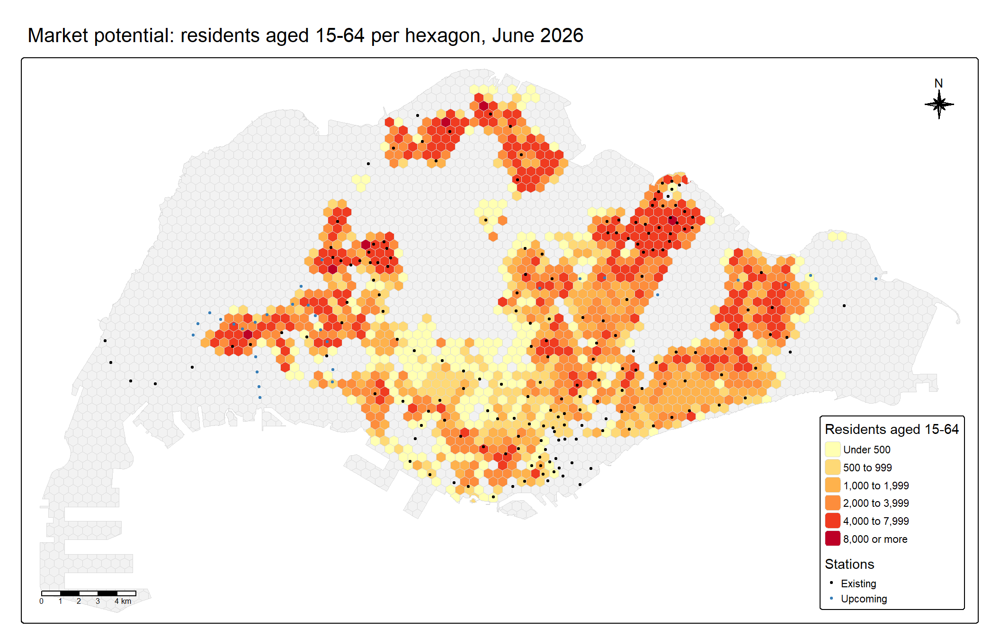
4.9 Preparing the Attractiveness Variables
In the Huff and MCI models, a station’s attractiveness is what draws residents to it ahead of a nearer station. Following Zhu et al. (2021), who measured attractiveness through the surrounding built environment, public transport access and the service a station offers, the candidate variables below are built from the data available for Singapore:
| Variable | Definition | Concept (Zhu et al., 2021) |
|---|---|---|
n_lines |
Number of MRT/LRT lines serving the station | Service quality |
bus_stops |
Bus stops within 400 m | Public transport access |
bus_int |
Whether a bus interchange lies within 400 m | Public transport access |
shopping |
Malls, department stores, supermarkets and markets within 400 m | Built environment |
food |
Food courts, restaurants, fast-food outlets and cafés within 400 m | Built environment |
education |
Schools, colleges and universities within 400 m | Built environment |
healthcare |
Hospitals, clinics and doctors within 400 m | Built environment |
community |
Community centres, libraries and sports centres within 400 m | Built environment |
A radius of 400 m, about a five-minute walk, is used to capture what lies immediately around each station. Which of these variables are kept in the final model is decided during calibration (Section 5), taking into account their correlation, shown in Section 4.9.4.
4.9.1 Points of interest
The two OpenStreetMap files are combined. Polygon features are converted to points with st_point_on_surface(), so that malls, schools and hospitals, which are mostly mapped as polygons, are counted alongside point features. Only the categories in the table above are kept, and the result is clipped to the study area with st_filter(), which also removes all features in Malaysia and Brunei.
poi_groups <- tribble(
~fclass, ~poi_group,
"mall", "shopping",
"department_store", "shopping",
"supermarket", "shopping",
"marketplace", "shopping",
"food_court", "food",
"restaurant", "food",
"fast_food", "food",
"cafe", "food",
"school", "education",
"college", "education",
"university", "education",
"hospital", "healthcare",
"clinic", "healthcare",
"doctors", "healthcare",
"community_centre", "community",
"library", "community",
"sports_centre", "community"
)
poi <- bind_rows(
poi_pt %>% mutate(osm_geom = "point"),
poi_poly %>% st_point_on_surface() %>% mutate(osm_geom = "polygon")
) %>%
inner_join(poi_groups, by = "fclass") %>%
st_filter(study_area)
poi %>%
st_drop_geometry() %>%
count(poi_group, osm_geom) %>%
pivot_wider(names_from = osm_geom, values_from = n)# A tibble: 5 × 3
poi_group point polygon
<chr> <int> <int>
1 community 212 238
2 education 100 545
3 food 8230 482
4 healthcare 561 98
5 shopping 633 295The table confirms that both files are needed. Most education POIs (545 of 645) exist only as polygons, as do about a third of shopping POIs, while food outlets are almost all points.
A feature could in principle be mapped twice, once as a point and once as a polygon. This is checked by counting pairs with the same name and category, one from each file, within 100 m of each other.
NoteAI Use Disclosure
AI tools were used to draft the R code that counts possible duplicate POIs across the point and polygon files using st_is_within_distance() and map2_int(). The output was reviewed and run by the author to verify correctness against the study data.
named <- poi %>% filter(!is.na(name))
near <- st_is_within_distance(named, named, dist = 100)
sum(map2_int(near, seq_along(near), \(js, i) {
sum(js > i &
named$name[js] == named$name[i] &
named$fclass[js] == named$fclass[i] &
named$osm_geom[js] != named$osm_geom[i])
}))[1] 22Only 22 such pairs exist among nearly 11,400 POIs, so possible double-counting is negligible and no features are removed.
4.9.2 Bus stops and bus interchanges
Bus stops outside the study area, in Johor Bahru and on Sentosa, are removed. Bus interchanges are identified from the stop description. The bus stop layer’s service-type code is not used, because it does not mark interchanges consistently. Interchange stops are named after the interchange, such as Toa Payoh Int. Stops described as after, before or opposite an interchange (Aft, Bef, Opp) are only near one and are excluded.
busstop_sg <- busstop %>% st_filter(study_area)
bus_int <- busstop_sg %>%
filter(str_detect(LOC_DESC, "\\bInt($|/)"),
!str_detect(LOC_DESC, "^(Aft|Bef|Opp) "))
nrow(bus_int)[1] 42sort(unique(bus_int$LOC_DESC)) [1] "Ang Mo Kio Int" "Bedok Int"
[3] "Bishan Int" "Boon Lay Int"
[5] "Bt Batok Int" "Bt Merah Int"
[7] "Bt Panjang Int" "Buangkok Int"
[9] "Choa Chu Kang Int" "Clementi Int"
[11] "Compassvale Int" "Eunos Int"
[13] "Eunos Stn/Int" "HarbourFront Int"
[15] "Hougang Ctrl Int" "Joo Koon Int"
[17] "Jurong East Int" "Jurong Town Hall Int"
[19] "Pasir Ris Int" "Pasir Ris Int/Mall"
[21] "Pasir Ris Int/Polyclinic" "Punggol Coast Int"
[23] "Punggol Int" "Punggol Stn/Int"
[25] "Sembawang Int" "Sembawang Int/Opp Blk 315"
[27] "Sengkang Int" "Serangoon Int"
[29] "Tampines Concourse Int" "Tampines Int"
[31] "Tampines Nth Int" "Tampines Stn/Int"
[33] "Tengah Int" "Toa Payoh Int"
[35] "Woodlands Int" "Woodlands Temp Int"
[37] "Woodleigh Int" "Yio Chu Kang Int"
[39] "Yishun Int" 42 interchange stops are found. They cover all the main bus interchanges, including the recently opened Tengah, Punggol Coast and Woodlands Temporary interchanges.
4.9.3 Counting features around each station
st_is_within_distance() lists, for each station, the features within 400 m, and lengths() counts them. The same function is applied to the existing and future networks, so that the new stations’ attractiveness is measured in exactly the same way as the existing stations’.
count_within <- function(stations, features, dist) {
lengths(st_is_within_distance(stations, features, dist = dist))
}
add_attractiveness <- function(dest) {
dest %>%
mutate(
bus_stops = count_within(geometry, busstop_sg, 400),
bus_int = as.integer(count_within(geometry, bus_int, 400) > 0),
shopping = count_within(geometry, filter(poi, poi_group == "shopping"), 400),
food = count_within(geometry, filter(poi, poi_group == "food"), 400),
education = count_within(geometry, filter(poi, poi_group == "education"), 400),
healthcare = count_within(geometry, filter(poi, poi_group == "healthcare"), 400),
community = count_within(geometry, filter(poi, poi_group == "community"), 400)
)
}
dest_existing <- add_attractiveness(dest_existing)
dest_future <- add_attractiveness(dest_future)
attr_vars <- c("n_lines", "bus_stops", "bus_int", "shopping", "food",
"education", "healthcare", "community")
dest_existing %>% st_drop_geometry() %>% select(all_of(attr_vars)) %>% summary() n_lines bus_stops bus_int shopping
Min. :1.000 Min. : 1.000 Min. :0.000 Min. : 0.000
1st Qu.:1.000 1st Qu.: 6.000 1st Qu.:0.000 1st Qu.: 1.000
Median :1.000 Median : 9.000 Median :0.000 Median : 2.500
Mean :1.174 Mean : 9.272 Mean :0.163 Mean : 3.304
3rd Qu.:1.000 3rd Qu.:12.000 3rd Qu.:0.000 3rd Qu.: 4.000
Max. :3.000 Max. :22.000 Max. :1.000 Max. :20.000
food education healthcare community
Min. : 0.00 Min. : 0.00 Min. : 0.000 Min. :0.000
1st Qu.: 4.00 1st Qu.: 0.00 1st Qu.: 0.000 1st Qu.:0.000
Median : 15.00 Median : 1.00 Median : 1.000 Median :1.000
Mean : 40.64 Mean : 1.38 Mean : 2.163 Mean :1.196
3rd Qu.: 50.00 3rd Qu.: 2.00 3rd Qu.: 3.000 3rd Qu.:2.000
Max. :504.00 Max. :16.00 Max. :22.000 Max. :7.000 4.9.4 Checking for zero values and correlation
The MCI model takes the logarithm of each attractiveness variable, and the logarithm of 0 is undefined, so no variable may contain 0 or a missing value. summary() above shows no missing values. The number of zeros in each variable is counted below.
dest_existing %>%
st_drop_geometry() %>%
summarise(across(all_of(attr_vars), \(x) sum(x == 0))) %>%
pivot_longer(everything(), names_to = "variable", values_to = "stations_with_zero")# A tibble: 8 × 2
variable stations_with_zero
<chr> <int>
1 n_lines 0
2 bus_stops 0
3 bus_int 154
4 shopping 35
5 food 7
6 education 70
7 healthcare 58
8 community 73Zeros are genuine here, not data errors. For example, 154 stations have no bus interchange nearby, and 70 have no school within 400 m. They are therefore recoded rather than removed:
bus_intis a yes/no variable, so 0 is recoded to 0.01, a value close to 0 but not 0.- The counts (
bus_stops,shopping,food,education,healthcare,community) have 1 added to every station. Recoding a count of 0 to 0.01 would make a station with no POIs look far more different from one with a single POI (log 0.01 = -4.6, against log 1 = 0) than one POI is from fifty. Adding 1 keeps the spacing between counts sensible, and is applied to every station so that rankings are unchanged.
recode_attr <- function(dest) {
dest %>%
mutate(across(c(bus_stops, shopping, food, education, healthcare, community),
\(x) x + 1),
bus_int = if_else(bus_int == 1, 1, 0.01))
}
dest_existing <- recode_attr(dest_existing)
dest_future <- recode_attr(dest_future)
dest_existing %>% # values that would break the log transform
st_drop_geometry() %>%
summarise(across(all_of(attr_vars), \(x) sum(x <= 0 | is.na(x))))# A tibble: 1 × 8
n_lines bus_stops bus_int shopping food education healthcare community
<int> <int> <int> <int> <int> <int> <int> <int>
1 0 0 0 0 0 0 0 0No zero or missing values remain.
Strongly correlated attractiveness variables would make the model’s estimates unstable, as the model cannot separate their effects. Spearman’s rank correlation is used, since the counts are highly skewed.
dest_existing %>%
st_drop_geometry() %>%
select(am_tapins, all_of(attr_vars)) %>%
cor(method = "spearman") %>%
round(2) am_tapins n_lines bus_stops bus_int shopping food education
am_tapins 1.00 0.22 0.23 0.38 0.23 0.14 0.07
n_lines 0.22 1.00 0.15 0.21 0.24 0.36 -0.09
bus_stops 0.23 0.15 1.00 0.19 0.29 0.20 0.30
bus_int 0.38 0.21 0.19 1.00 0.24 0.20 -0.06
shopping 0.23 0.24 0.29 0.24 1.00 0.71 0.12
food 0.14 0.36 0.20 0.20 0.71 1.00 0.06
education 0.07 -0.09 0.30 -0.06 0.12 0.06 1.00
healthcare 0.30 0.15 0.28 0.23 0.55 0.57 0.21
community 0.27 0.07 0.26 0.28 0.31 0.38 0.09
healthcare community
am_tapins 0.30 0.27
n_lines 0.15 0.07
bus_stops 0.28 0.26
bus_int 0.23 0.28
shopping 0.55 0.31
food 0.57 0.38
education 0.21 0.09
healthcare 1.00 0.40
community 0.40 1.00shopping and food are strongly correlated (0.71), and healthcare is moderately correlated with both (0.55 and 0.57), as all three concentrate in town centres. However, as they are not strongly correlated (more than 0.8), all three are retained in the model. All other pairs are below 0.45.
The correlations with am_tapins give a first indication. Stations near a bus interchange (0.38), and those with more healthcare (0.30) and community facilities (0.27) nearby, record more morning-peak tap-ins.
The upcoming stations’ attractiveness values are listed below for a visual check.
dest_future %>%
st_drop_geometry() %>%
filter(status == "Upcoming") %>%
select(station, lines, all_of(attr_vars)) %>%
arrange(lines, station)# A tibble: 29 × 10
station lines n_lines bus_stops bus_int shopping food education healthcare
<chr> <chr> <int> <dbl> <dbl> <dbl> <dbl> <dbl> <dbl>
1 AVIATION… CRL 1 3 0.01 1 1 1 1
2 DEFU CRL 1 5 0.01 1 1 1 1
3 LOYANG CRL 1 5 0.01 1 2 1 1
4 PASIR RI… CRL 1 13 0.01 2 1 4 1
5 SERANGOO… CRL 1 15 0.01 3 4 3 2
6 TAMPINES… CRL 1 6 1 2 1 1 1
7 TAVISTOCK CRL 1 12 0.01 1 3 1 1
8 TECK GHEE CRL 1 7 0.01 2 2 2 1
9 BAHAR JU… JRL 1 13 0.01 2 2 4 3
10 BUKIT BA… JRL 1 8 0.01 4 6 3 1
# ℹ 19 more rows
# ℹ 1 more variable: community <dbl>As expected for stations built ahead of development, several new stations, such as Tengah, Hong Kah and Aviation Park, have few facilities within 400m.
4.10 Building the Spatial Interaction Data Frames
4.10.1 Distance matrices
The distance from every origin to every station is computed with st_distance(). Origins are passed first and stations second, so that each row of the matrix is an origin and each column a station. The row and column names are set to hex_id and station before the matrix is converted to long format with pivot_longer(), so each distance stays attached to the correct origin and station. Each origin’s point lies inside its hexagon, as prepared in Section 4.8.2.
The same steps are applied to the existing and future networks, so they are wrapped in a function. The function also attaches each station’s attractiveness variables, giving one row per origin-station pair. The columns are ordered with origin first, station second, then distance and attractiveness, which is the long format the MCI functions require.
build_si <- function(origins, dest) {
dmat <- st_distance(origins, dest)
rownames(dmat) <- origins$hex_id
colnames(dmat) <- dest$station
dmat %>%
as.data.frame() %>%
rownames_to_column("hex_id") %>%
pivot_longer(-hex_id, names_to = "station", values_to = "distance") %>%
mutate(distance = as.numeric(distance)) %>%
left_join(dest %>% st_drop_geometry() %>% select(station, all_of(attr_vars)),
by = "station")
}
si_existing <- build_si(origins, dest_existing)
si_future <- build_si(origins, dest_future)
c(existing_rows = nrow(si_existing), future_rows = nrow(si_future))existing_rows future_rows
222824 257943 head(si_existing)# A tibble: 6 × 11
hex_id station distance n_lines bus_stops bus_int shopping food education
<chr> <chr> <dbl> <int> <dbl> <dbl> <dbl> <dbl> <dbl>
1 H0511 ADMIRALTY 17131. 1 14 0.01 8 12 2
2 H0511 ALJUNIED 22249. 1 15 0.01 3 39 4
3 H0511 ANG MO KIO 18700. 1 12 1 6 50 3
4 H0511 BAKAU 25191. 1 15 0.01 1 3 2
5 H0511 BANGKIT 10806. 1 12 0.01 6 9 2
6 H0511 BARTLEY 21764. 1 10 0.01 1 3 3
# ℹ 2 more variables: healthcare <dbl>, community <dbl>summary(si_existing$distance) Min. 1st Qu. Median Mean 3rd Qu. Max.
15.51 6851.65 10607.13 11137.39 14974.37 39434.83 Each data frame has one row per origin-station pair: the number of populated hexagons multiplied by 184 or 213 stations. The shortest distance is about 16 m, so no distance is zero, and the distance term can be log-transformed without recoding.
To confirm that the pivot kept each distance with the right origin and station, one value from the long table is compared with a direct calculation.
c(from_table = si_existing %>%
filter(hex_id == origins$hex_id[1], station == dest_existing$station[1]) %>%
pull(distance),
direct = as.numeric(st_distance(origins[1, ], dest_existing[1, ])))from_table direct
17131.03 17131.03 The two values are identical.
4.10.2 How far residents are from a station
The distance from each populated hexagon to its nearest existing station shows how far residents typically are from the network. It also informs whether residents should be able to choose among every station on the island or only nearby ones.
si_existing %>%
group_by(hex_id) %>%
summarise(nearest_m = min(distance)) %>%
pull(nearest_m) %>%
quantile(c(0.5, 0.9, 0.95, 0.99, 1)) %>%
round() 50% 90% 95% 99% 100%
612 1361 1633 2081 3714 Half of the populated hexagons have a station within about 620 m, 95% within 1.6 km, and all within 3.7 km. Under the Huff model, a station 15 km away receives a very small probability because of distance decay. However, because every station remains in each resident’s choice set, adding new stations slightly reduces the predicted ridership of all stations, including distant ones. This is examined in Section 6.2.
4.10.3 Origin and destination data frames
An origin data frame and two destination data frames are prepared without geometry, with identifier columns named as in the spatial interaction data frames.
origin_df <- origins %>%
st_drop_geometry() %>%
select(hex_id, pop_hdb, pop_private, pop_total)
dest_df <- dest_existing %>%
st_drop_geometry() %>%
select(station, am_tapins, mode, lines, all_of(attr_vars))
dest_future_df <- dest_future %>%
st_drop_geometry() %>%
select(station, status, am_tapins, mode, lines, all_of(attr_vars))
glimpse(origin_df)Rows: 1,211
Columns: 4
$ hex_id <chr> "H0511", "H0528", "H0545", "H0562", "H0563", "H0580", "H05…
$ pop_hdb <dbl> 1112.5790, 1730.1830, 4160.4659, 566.3228, 4737.9368, 3154…
$ pop_private <dbl> 0.00000, 45.20792, 370.98385, 551.15049, 0.00000, 701.2412…
$ pop_total <dbl> 1112.5790, 1775.3909, 4531.4497, 1117.4733, 4737.9368, 385…glimpse(dest_df)Rows: 184
Columns: 12
$ station <chr> "ADMIRALTY", "ALJUNIED", "ANG MO KIO", "BAKAU", "BANGKIT", …
$ am_tapins <dbl> 13895.7390, 5348.4043, 10164.4709, 1109.5086, 525.6147, 275…
$ mode <chr> "MRT", "MRT", "MRT", "LRT", "LRT", "MRT", "MRT", "MRT", "MR…
$ lines <chr> "NSL", "EWL", "NSL", "SKLRT", "BPLRT", "CCL", "CCL, DTL", "…
$ n_lines <int> 1, 1, 1, 1, 1, 1, 2, 1, 1, 1, 1, 1, 1, 1, 2, 1, 1, 2, 1, 1,…
$ bus_stops <dbl> 14, 15, 12, 15, 12, 10, 5, 4, 11, 9, 6, 10, 18, 12, 7, 8, 6…
$ bus_int <dbl> 0.01, 0.01, 1.00, 0.01, 0.01, 0.01, 0.01, 0.01, 0.01, 1.00,…
$ shopping <dbl> 8, 3, 6, 1, 6, 1, 3, 1, 7, 7, 2, 2, 11, 3, 7, 5, 4, 5, 3, 1…
$ food <dbl> 12, 39, 50, 3, 9, 3, 22, 2, 84, 37, 6, 3, 143, 80, 45, 14, …
$ education <dbl> 2, 4, 3, 2, 2, 3, 1, 1, 3, 1, 2, 2, 17, 2, 1, 1, 1, 2, 3, 1…
$ healthcare <dbl> 4, 6, 6, 2, 3, 1, 1, 1, 8, 3, 5, 1, 6, 2, 7, 7, 11, 2, 1, 4…
$ community <dbl> 3, 6, 4, 1, 1, 1, 1, 3, 3, 3, 2, 1, 4, 2, 6, 2, 3, 2, 2, 3,…These five data frames complete the inputs for the model:
origin_df: one row per populated hexagon, with its market potential.dest_dfanddest_future_df: one row per station, with observed ridership for existing stations and the attractiveness variables.si_existingandsi_future: one row per origin-station pair, with distance and attractiveness.
5. Calibrating the Spatial Interaction Model
5.1 Model Specification
The Huff model (Huff, 1964) gives the probability that a resident of hexagon \(i\) uses station \(j\), relative to all competing stations \(k\):
\[ P_{ij} = \frac{A_j \, d_{ij}^{\lambda}}{\sum_{k} A_k \, d_{ik}^{\lambda}} \]
where \(A_j\) is the attractiveness of station \(j\), \(d_{ij}\) is the distance from hexagon \(i\) to station \(j\), and \(\lambda\) is the distance-decay exponent. \(\lambda\) is negative, so a more distant station is less likely to be chosen. The larger its magnitude, the more strongly residents prefer the nearest station.
In the original Huff model, attractiveness is a single variable. The Multiplicative Competitive Interaction (MCI) model (Nakanishi & Cooper, 1974) extends it to several attributes, each raised to its own exponent \(\gamma_m\):
\[ A_j = \prod_{m} X_{mj}^{\gamma_m} \]
A positive \(\gamma_m\) means the attribute makes a station more attractive, and the size of \(\gamma_m\) shows how strongly.
Predicted morning-peak tap-ins at each station are the probabilities weighted by the trips generated in each hexagon:
\[ \hat{T}_j = \sum_i P_{ij} \, r \, C_i, \qquad r = \frac{\sum_j T_j}{\sum_i C_i} \]
where \(C_i\) is the market potential of hexagon \(i\) (residents aged 15-64), \(T_j\) is the observed tap-ins at station \(j\), and \(r\) is the overall trip rate. The trip rate puts market potential and tap-ins on the same scale: without it, predicted totals would sum to the population rather than to the number of tap-ins. This corresponds to shares.total() in the MCI package, used in Kam (2026, Chapter 18) to estimate store sales from market shares.
5.1.1 Calibrating from station totals
The standard way to calibrate an MCI model is ordinary least squares on log-centred market shares (Nakanishi & Cooper, 1974). It requires observed shares for every origin-destination pair, i.e. how many residents of each hexagon used each station. That information is not available: the passenger volume data record tap-ins by station, not by where riders live.
When only totals per location are known, Huff-type models are instead calibrated by nonlinear fitting. The parameters are adjusted until predicted totals match observed totals as closely as possible (Orpana & Lampinen, 2003; De Beule et al., 2014; Wieland, 2017, 2026). The same approach is used here. \(\lambda\) and the MCI exponents \(\gamma_m\) are estimated together by minimising the squared difference between the logarithms of predicted and observed tap-ins:
\[ \min_{\lambda,\,\gamma} \; \sum_j \left( \ln \hat{T}_j - \ln T_j \right)^2 \]
Logarithms are used so that the fit is judged on relative rather than absolute error. Otherwise, the dozen busiest stations, with over 10,000 tap-ins each, would dominate the fit, and stations with a few hundred tap-ins would be ignored.
The MCI package’s huff.fit() also fits to totals, but it does so by giving every station its own attractiveness value. That reproduces the existing stations almost perfectly but cannot predict a station that has not yet opened, which is the purpose of this exercise. Estimating exponents for station attributes allows attractiveness to be computed for the new stations from their attributes.
5.1.2 Models compared
Three models are calibrated, each adding one element to the previous one, so that the gain from each element can be assessed:
| Model | Attractiveness \(A_j\) | Distance decay \(\lambda\) | Purpose |
|---|---|---|---|
| M0: Null Huff | Equal for all stations | Fixed at -2 | Reference model: distance alone, with the conventional value of \(\lambda\) adopted by Zhu et al. (2021) and the default in the MCI package |
| M1: Calibrated Huff | Equal for all stations | Estimated | Tests whether distance decay in Singapore differs from the conventional value |
| M2: MCI | Product of station attributes | Estimated | Tests whether station attributes improve the fit; used for prediction |
5.1.3 Assumptions
- Residents aged 15-64 generate morning-peak tap-ins at the same rate everywhere (\(r\) is the same for every hexagon).
- Every resident can choose any station. As shown in Section 4.10.2, distant stations receive very small probabilities.
- Straight-line distance represents the effort of reaching a station. Actual walking routes, feeder bus routes and barriers such as expressways are not modelled.
- Opening new stations redistributes riders rather than creating new ones. The total number of tap-ins is held constant when the new stations are added in Section 6.
5.2 Preparing the Model Inputs
An additional attractiveness variable is added: mrt, which is 1 for MRT stations and 0.01 for LRT stations. A preliminary fit without it over-predicted LRT stations by a median factor of about three. LRT trains are smaller and slower, and many residents of LRT-served estates walk or take a bus to the MRT interchange instead. As mrt is a yes/no variable, LRT stations are coded 0.01 rather than 0, following the same rule as bus_int. All upcoming JRL and CRL stations are MRT stations.
dest_df <- dest_df %>% mutate(mrt = if_else(mode == "MRT", 1, 0.01))
dest_future_df <- dest_future_df %>% mutate(mrt = if_else(mode == "MRT", 1, 0.01))The model works on matrices, with one row per hexagon and one column per station. The long spatial interaction data frames are therefore converted back to wide distance matrices with pivot_wider(). Rows are put in the order of origin_df, and columns in the order of the destination data frame, so that each row matches its market potential and each column its attractiveness. A spot check confirms that one value is the same in the matrix and in the long table.
hex_ids <- origin_df$hex_id
C_i <- origin_df$pop_total
T_obs <- dest_df$am_tapins
n_exist <- nrow(dest_df)
trip_rate <- sum(T_obs) / sum(C_i)
trip_rate[1] 0.2013931to_matrix <- function(si, stations) {
si %>%
select(hex_id, station, distance) %>%
pivot_wider(names_from = station, values_from = distance) %>%
slice(match(hex_ids, hex_id)) %>%
select(all_of(stations)) %>%
as.matrix()
}
D_exist <- to_matrix(si_existing, dest_df$station)
D_future <- to_matrix(si_future, dest_future_df$station)
dim(D_exist); dim(D_future)[1] 1211 184[1] 1211 213D_exist[1, 1] == si_existing$distance[si_existing$hex_id == hex_ids[1] &
si_existing$station == dest_df$station[1]]ADMIRALTY
TRUE On average, 0.2 morning-peak tap-ins are made per resident aged 15-64.
Two functions implement the model. huff_prob() computes \(P_{ij}\) for every hexagon and station. It works with the logarithm of each term and subtracts the row maximum before exponentiating, which gives the same probabilities but avoids numerical overflow. predict_totals() then computes \(\hat{T}_j\). fit_stats() summarises how well predicted totals match observed ones:
- Pseudo-R²: the squared correlation between predicted and observed tap-ins.
- R² of logs: the same on the log scale, which gives small stations equal weight.
- Median absolute percentage error (median APE): the typical relative error at a station. The median is used rather than the mean because a few stations with very few tap-ins, such as Teck Lee LRT with about 6, would otherwise dominate.
- Root mean squared error (RMSE): the typical error in tap-ins.
NoteAI Use Disclosure
AI tools were used to draft the vectorised R functions huff_prob() and predict_totals(), including the numerically stable computation of probabilities using sweep(). The output was reviewed by the author and checked against huff.shares() and shares.total() of the MCI package below.
huff_prob <- function(D, logA, lambda) {
U <- sweep(lambda * log(D), 2, logA, "+") # log of A_j * d_ij^lambda
U <- U - apply(U, 1, max) # avoid overflow; probabilities unchanged
P <- exp(U)
P / rowSums(P)
}
predict_totals <- function(D, logA, lambda) {
as.vector(crossprod(huff_prob(D, logA, lambda), C_i * trip_rate))
}
fit_stats <- function(T_hat, T_obs) {
tibble(pseudo_r2 = cor(T_hat, T_obs)^2,
r2_log = cor(log(T_hat), log(T_obs))^2,
median_ape = median(abs(T_hat - T_obs) / T_obs) * 100,
rmse = sqrt(mean((T_hat - T_obs)^2)))
}To confirm that these functions implement the Huff model correctly, they are compared with huff.shares() and shares.total() of the MCI package (Wieland, 2017). The comparison is run on the first 50 hexagons only, because huff.shares() is computationally heavy. The MCI functions look up their input data frame by name, so the inputs are assigned to named objects rather than piped in.
check_hex <- hex_ids[1:50]
mci_input <- si_existing %>%
filter(hex_id %in% check_hex) %>%
select(hex_id, station, distance) %>%
mutate(attrac = 1) %>%
as.data.frame()
mci_shares <- huff.shares(mci_input, "hex_id", "station", "attrac", "distance",
gamma = 1, lambda = -2) %>%
left_join(origin_df %>% select(hex_id, pop_total), by = "hex_id") %>%
mutate(trips = pop_total * trip_rate)
mci_check <- shares.total(mci_shares, "hex_id", "station", "p_ij", "trips")
ours <- as.vector(crossprod(huff_prob(D_exist[1:50, ], rep(0, n_exist), -2),
C_i[1:50] * trip_rate))
max(abs(ours - mci_check$sum_E_j[match(dest_df$station, mci_check$suppliers_single)]))[1] 1.818989e-12The largest difference is effectively zero, so the functions give the same results as the MCI package.
5.3 M0: Null Huff Model
All stations are equally attractive (\(\log A_j = 0\)), and \(\lambda = -2\).
T_m0 <- predict_totals(D_exist, rep(0, n_exist), lambda = -2)
fit_stats(T_m0, T_obs)# A tibble: 1 × 4
pseudo_r2 r2_log median_ape rmse
<dbl> <dbl> <dbl> <dbl>
1 0.528 0.380 61.3 2611.Distance alone explains 53% of the variation in station tap-ins, but the typical station is off by 61%.
5.4 M1: Calibrated Huff Model
Attractiveness is still equal for all stations, but \(\lambda\) is now estimated. With a single parameter, optimize() searches between -5 and -0.5 for the value that minimises the log error.
log_loss <- function(T_hat, T_obs) sum((log(T_hat) - log(T_obs))^2)
m1 <- optimize(\(lambda) log_loss(predict_totals(D_exist, rep(0, n_exist), lambda), T_obs),
interval = c(-5, -0.5))
lambda_m1 <- m1$minimum
lambda_m1[1] -2.76923T_m1 <- predict_totals(D_exist, rep(0, n_exist), lambda_m1)
fit_stats(T_m1, T_obs)# A tibble: 1 × 4
pseudo_r2 r2_log median_ape rmse
<dbl> <dbl> <dbl> <dbl>
1 0.576 0.406 54.3 2384.The estimated \(\lambda\) is -2.77, steeper than the conventional -2 used by Zhu et al. (2021). Residents in Singapore are therefore more strongly drawn to their nearest station than the conventional value assumes. This is plausible in a dense network where most residents have a station within walking distance (Section 4.10.2). Calibrating \(\lambda\) alone improves the fit only modestly, however, because every station is still treated as equally attractive.
5.5 M2: MCI Model
The MCI model estimates \(\lambda\) together with an exponent for each attractiveness variable. All nine variables are entered: the eight prepared in Section 4.9 and mrt. No pair is correlated above 0.8 (Section 4.9.4).
optim() with the BFGS method searches for the parameter values that minimise the log error, starting from \(\lambda = -2\) and all exponents at 0, i.e. M0. With hessian = TRUE, it also returns the curvature of the loss at the solution. From this, approximate standard errors are computed using the standard result for least-squares estimation: the covariance of the estimates is \(2\hat{\sigma}^2 H^{-1}\), where \(H\) is the Hessian and \(\hat{\sigma}^2\) the residual variance. Each estimate is then tested against zero with a z-test.
The fit is wrapped in a function with a train argument, so the same code can be reused for the holdout test in Section 5.8.
NoteAI Use Disclosure
AI tools were used to draft the R code that estimates the MCI parameters with optim() and computes approximate standard errors from the Hessian. The output was reviewed and run by the author to verify correctness against the study data.
vars_m2 <- c("n_lines", "mrt", "bus_stops", "bus_int",
"shopping", "food", "education", "healthcare", "community")
X_exist <- log(as.matrix(dest_df[, vars_m2]))
X_future <- log(as.matrix(dest_future_df[, vars_m2]))
fit_mci <- function(train = rep(TRUE, n_exist)) {
objective <- function(p) {
T_hat <- predict_totals(D_exist, X_exist %*% p[-1], p[1])
log_loss(T_hat[train], T_obs[train])
}
optim(c(-2, rep(0, length(vars_m2))), objective,
method = "BFGS", hessian = TRUE, control = list(maxit = 500))
}
coef_table <- function(fit, n_obs) {
sigma2 <- fit$value / (n_obs - length(fit$par))
se <- sqrt(diag(2 * sigma2 * solve(fit$hessian)))
tibble(term = c("lambda (distance)", vars_m2),
estimate = fit$par,
std_error = se,
z = fit$par / se,
p_value = 2 * pnorm(-abs(fit$par / se)))
}
m2 <- fit_mci()
m2$convergence # 0 means the search converged[1] 0coef_m2 <- coef_table(m2, n_exist)
coef_m2 %>% mutate(across(where(is.numeric), \(x) round(x, 3))) %>% kable()| term | estimate | std_error | z | p_value |
|---|---|---|---|---|
| lambda (distance) | -2.517 | 0.116 | -21.680 | 0.000 |
| n_lines | 1.161 | 0.268 | 4.334 | 0.000 |
| mrt | 0.723 | 0.065 | 11.098 | 0.000 |
| bus_stops | 0.413 | 0.173 | 2.389 | 0.017 |
| bus_int | -0.030 | 0.051 | -0.590 | 0.555 |
| shopping | 0.310 | 0.134 | 2.316 | 0.021 |
| food | -0.159 | 0.079 | -2.009 | 0.045 |
| education | -0.173 | 0.132 | -1.310 | 0.190 |
| healthcare | 0.247 | 0.141 | 1.758 | 0.079 |
| community | 0.060 | 0.139 | 0.431 | 0.667 |
lambda_m2 <- m2$par[1]
gamma_m2 <- m2$par[-1]
T_m2 <- predict_totals(D_exist, X_exist %*% gamma_m2, lambda_m2)
fit_stats(T_m2, T_obs)# A tibble: 1 × 4
pseudo_r2 r2_log median_ape rmse
<dbl> <dbl> <dbl> <dbl>
1 0.834 0.728 29.9 1533.The interpretation of the estimates is as follows:
- Distance decay (\(\lambda\) = -2.52) remains steeper than -2 once station attributes are accounted for. Its 95% confidence interval, -2.74 to -2.29, excludes -2.
- Number of lines (
n_lines) has a strong positive effect. An exponent of 1.16 means a two-line interchange is about 2.2 times as attractive as an otherwise similar single-line station. Residents will travel further to an interchange because it reaches more destinations without a transfer. - MRT versus LRT (
mrt) is strongly significant. Holding other attributes equal, an LRT station is only about 4% as attractive as an MRT station. - Bus stops within 400 m (
bus_stops) has a positive effect. Stations well served by feeder buses draw residents from further away, consistent with the importance of public transport access in Zhu et al. (2021). - Shopping and food (
shopping,food) should be read together.shoppinghas a positive exponent (0.31) andfooda small negative one (-0.16). As the two are strongly correlated (0.71), the model can only partly separate them: holding the number of malls and supermarkets fixed, a station surrounded by many restaurants and cafés tends to be a commercial centre that people travel to, rather than a place residents board from in the morning. Their combined effect is modest. - The remaining variables (
bus_int,education,healthcare,community) are not significant at the 5% level, and their exponents are small.bus_intis not significant even though it had the highest correlation with tap-ins (0.38, Section 4.9.4). Bus interchanges sit at multi-line, bus-rich stations, son_linesandbus_stopsalready capture their effect.
The non-significant variables are kept in M2 so that all candidate attributes are evaluated in one model. Their small exponents mean they have little effect on predictions.
5.6 Comparing the Models
model_fit <- bind_rows(
fit_stats(T_m0, T_obs) %>% mutate(model = "M0: Null Huff", lambda = -2, parameters = 0),
fit_stats(T_m1, T_obs) %>% mutate(model = "M1: Calibrated Huff", lambda = lambda_m1, parameters = 1),
fit_stats(T_m2, T_obs) %>% mutate(model = "M2: MCI", lambda = lambda_m2, parameters = 1 + length(vars_m2))
) %>%
select(model, parameters, lambda, everything())
model_fit %>% mutate(across(where(is.numeric), \(x) round(x, 2))) %>% kable()| model | parameters | lambda | pseudo_r2 | r2_log | median_ape | rmse |
|---|---|---|---|---|---|---|
| M0: Null Huff | 0 | -2.00 | 0.53 | 0.38 | 61.26 | 2611.41 |
| M1: Calibrated Huff | 1 | -2.77 | 0.58 | 0.41 | 54.29 | 2383.72 |
| M2: MCI | 10 | -2.52 | 0.83 | 0.73 | 29.94 | 1533.47 |
fit_long <- tibble(station = dest_df$station, mode = dest_df$mode, observed = T_obs,
`M0: Null Huff` = T_m0, `M1: Calibrated Huff` = T_m1, `M2: MCI` = T_m2) %>%
pivot_longer(matches("^M[0-9]"), names_to = "model", values_to = "predicted")
p_fit <- ggplot(fit_long, aes(x = observed, y = predicted, colour = mode)) +
geom_abline(slope = 1, intercept = 0, linetype = "dashed", colour = "grey50") +
geom_point(alpha = 0.7, size = 1.6) +
scale_x_log10(labels = scales::comma) +
scale_y_log10(labels = scales::comma) +
scale_colour_manual(values = c(MRT = "#2b6cb0", LRT = "#dd6b20")) +
facet_wrap(~ model) +
labs(x = "Observed tap-ins per weekday, 7-9am (log scale)",
y = "Predicted tap-ins (log scale)", colour = "Station type",
title = "Observed versus predicted morning-peak tap-ins at existing stations") +
theme_minimal()
p_fit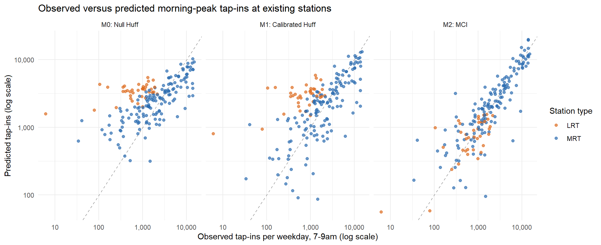
Each point is a station, and a perfect model would place every point on the dashed line.
- M0 and M1: the points form a wide cloud. LRT stations sit well above the line, i.e. they are over-predicted, because these models cannot tell a small LRT station from a busy interchange.
- M2: the cloud tightens around the line, and the LRT stations move onto it. Pseudo-R² rises from 0.53 in M0 to 0.83 in M2, and the median error falls from 61% to 30%.
Most of the improvement comes from station attributes rather than from calibrating distance decay. M2 is therefore used for prediction.
5.7 Where the Model Misfits
The ratio of predicted to observed tap-ins shows which stations M2 over- or under-predicts. Ratios are grouped symmetrically around 1, so that over-prediction by a factor of 2 and under-prediction by a factor of 2 are treated alike.
resid_m2 <- dest_existing %>%
select(station) %>%
left_join(dest_df %>% select(station, mode, am_tapins), by = "station") %>%
mutate(predicted = T_m2[match(station, dest_df$station)],
ratio = predicted / am_tapins,
fit_class = cut(ratio, breaks = c(0, 0.5, 0.8, 1.25, 2, Inf),
labels = c("Under-predicted (< 0.5)", "Slightly under (0.5-0.8)",
"Close (0.8-1.25)", "Slightly over (1.25-2)",
"Over-predicted (> 2)")))
m_resid <- tm_shape(hex_land) +
tm_polygons(fill = "grey95", col = "grey85", lwd = 0.2) +
tm_shape(resid_m2) +
tm_symbols(fill = "fit_class",
fill.scale = tm_scale_categorical(values = c("#b2182b", "#ef8a62", "#f7f7f7",
"#67a9cf", "#2166ac")),
fill.legend = tm_legend(title = "Predicted / observed"),
col = "grey30", size = 0.5) +
tm_title("M2 fit at existing stations") +
tm_compass(type = "8star", size = 2, position = c("right", "top")) +
tm_scalebar(position = c("left", "bottom")) +
tm_layout(frame = TRUE, legend.position = c("right", "bottom"))
m_resid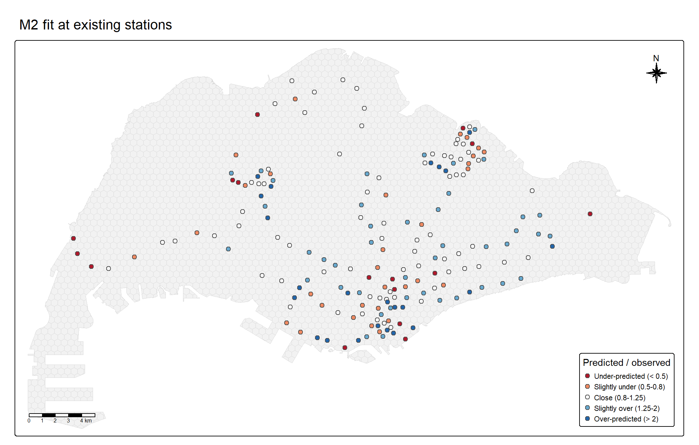
resid_m2 %>% st_drop_geometry() %>% count(fit_class)# A tibble: 5 × 2
fit_class n
<fct> <int>
1 Under-predicted (< 0.5) 16
2 Slightly under (0.5-0.8) 31
3 Close (0.8-1.25) 71
4 Slightly over (1.25-2) 43
5 Over-predicted (> 2) 23resid_m2 %>% st_drop_geometry() %>% arrange(ratio) %>% head(6)# A tibble: 6 × 6
station mode am_tapins predicted ratio fit_class
<chr> <chr> <dbl> <dbl> <dbl> <fct>
1 TUAS LINK MRT 1467. 95.9 0.0653 Under-predicted (< 0.5)
2 KRANJI MRT 6196. 635. 0.102 Under-predicted (< 0.5)
3 NEWTON MRT 9309. 1723. 0.185 Under-predicted (< 0.5)
4 TUAS WEST ROAD MRT 519. 128. 0.247 Under-predicted (< 0.5)
5 CHANGI AIRPORT MRT 1410. 392. 0.278 Under-predicted (< 0.5)
6 SAMUDERA LRT 990. 345. 0.349 Under-predicted (< 0.5)resid_m2 %>% st_drop_geometry() %>% arrange(desc(ratio)) %>% head(6)# A tibble: 6 × 6
station mode am_tapins predicted ratio fit_class
<chr> <chr> <dbl> <dbl> <dbl> <fct>
1 KEPPEL MRT 40.9 647. 15.8 Over-predicted (> 2)
2 EXPO MRT 299. 3167. 10.6 Over-predicted (> 2)
3 RENJONG LRT 105. 986. 9.38 Over-predicted (> 2)
4 TECK LEE LRT 6.07 56.1 9.24 Over-predicted (> 2)
5 LABRADOR PARK MRT 177. 912. 5.17 Over-predicted (> 2)
6 GARDENS BY THE BAY MRT 33.9 165. 4.87 Over-predicted (> 2)Most stations are predicted within a factor of two. The largest errors form clear groups, each with a plausible explanation outside the model:
- Strongly under-predicted: the Tuas stations and Kranji. These record far more morning tap-ins than their resident population can explain. The Tuas stations serve industrial estates with foreign-worker dormitories, and Kranji is the first station for many workers crossing from Johor Bahru by bus. Neither group is in the SingStat resident population, which covers citizens and permanent residents only.
- Also under-predicted: Changi Airport and Newton. Changi Airport’s morning tap-ins come largely from airport workers and travellers rather than nearby residents. Newton’s may include residents not captured in the population data, such as non-residents renting nearby condominiums.
- Strongly over-predicted: Expo, Keppel and Labrador Park. These are mainly destination stations, for an exhibition centre, a port and business park area, and a waterfront park. Nearby residents tend to board elsewhere, and the model has no way to represent a station’s role as a destination.
- Over-predicted: some LRT stations, such as Teck Lee and Renjong. Even with the
mrtvariable, the model cannot fully capture how little some LRT stations are used, for example where residents can walk directly to an MRT station instead.
These patterns point to two limitations: non-resident populations are missing, and morning tap-ins measure only one direction of travel. Both matter for the new stations in Section 6.
5.8 Holdout Validation: Predicting Recently Opened Stations
A good fit to the stations used for calibration does not show how well the model predicts a station before it opens, which is the purpose of Objective 2. To test this, the stations that opened most recently are treated as if they were new:
- Thomson-East Coast Line Stage 4: Tanjong Rhu, Katong Park, Tanjong Katong, Marine Parade, Marine Terrace, Siglap and Bayshore.
- Punggol Coast.
- Hume, which opened in February 2025.
- Circle Line Stage 6: Keppel, Cantonment and Prince Edward Road, which first appear in the July 2026 data.
M2 is refitted with these stations excluded from the loss. They remain in the network, since they competed for residents during the observation period, but their observed tap-ins are not used to estimate the parameters. Their tap-ins are then predicted from their attributes alone and compared with what was observed.
NoteAI Use Disclosure
AI tools were used to design the holdout validation and to draft the R code that refits M2 without the recently opened stations, compares their predicted and observed ridership and computes the Spearman rank correlation. The output was reviewed and run by the author to verify correctness against the study data.
holdout <- c("TANJONG RHU", "KATONG PARK", "TANJONG KATONG", "MARINE PARADE",
"MARINE TERRACE", "SIGLAP", "BAYSHORE", "PUNGGOL COAST", "HUME",
"KEPPEL", "CANTONMENT", "PRINCE EDWARD ROAD")
stopifnot(all(holdout %in% dest_df$station))
is_test <- dest_df$station %in% holdout
m2_ho <- fit_mci(train = !is_test)
T_ho <- predict_totals(D_exist, X_exist %*% m2_ho$par[-1], m2_ho$par[1])
bind_rows(fit_stats(T_ho[!is_test], T_obs[!is_test]) %>% mutate(set = "Calibration stations"),
fit_stats(T_ho[is_test], T_obs[is_test]) %>% mutate(set = "Holdout stations")) %>%
select(set, everything()) %>%
mutate(across(where(is.numeric), \(x) round(x, 2))) %>%
kable()| set | pseudo_r2 | r2_log | median_ape | rmse |
|---|---|---|---|---|
| Calibration stations | 0.84 | 0.75 | 28.31 | 1533.57 |
| Holdout stations | 0.73 | 0.56 | 68.02 | 1075.49 |
holdout_tab <- tibble(station = dest_df$station, observed = T_obs, predicted = T_ho) %>%
filter(station %in% holdout) %>%
mutate(ratio = predicted / observed) %>%
arrange(ratio)
holdout_tab %>%
mutate(across(where(is.numeric), \(x) round(x, 2))) %>%
kable()| station | observed | predicted | ratio |
|---|---|---|---|
| TANJONG RHU | 687.68 | 777.26 | 1.13 |
| MARINE TERRACE | 1794.92 | 2561.96 | 1.43 |
| PUNGGOL COAST | 2368.26 | 3623.34 | 1.53 |
| TANJONG KATONG | 834.19 | 1322.08 | 1.58 |
| CANTONMENT | 479.86 | 773.01 | 1.61 |
| SIGLAP | 1231.04 | 2019.27 | 1.64 |
| BAYSHORE | 1386.26 | 2384.38 | 1.72 |
| KATONG PARK | 731.03 | 1320.94 | 1.81 |
| PRINCE EDWARD ROAD | 137.00 | 278.51 | 2.03 |
| MARINE PARADE | 1434.57 | 3735.64 | 2.60 |
| HUME | 842.76 | 2685.49 | 3.19 |
| KEPPEL | 40.91 | 882.61 | 21.57 |
rho_ho <- cor(T_ho[is_test], T_obs[is_test], method = "spearman")
rho_ho[1] 0.8881119param_compare <- rbind(full_model = m2$par, holdout_model = m2_ho$par)
colnames(param_compare) <- c("lambda", vars_m2)
param_compare %>% round(2) %>% kable()| lambda | n_lines | mrt | bus_stops | bus_int | shopping | food | education | healthcare | community | |
|---|---|---|---|---|---|---|---|---|---|---|
| full_model | -2.52 | 1.16 | 0.72 | 0.41 | -0.03 | 0.31 | -0.16 | -0.17 | 0.25 | 0.06 |
| holdout_model | -2.51 | 1.03 | 0.76 | 0.32 | -0.03 | 0.29 | -0.21 | -0.20 | 0.27 | 0.04 |
Three results stand out:
- The parameters are stable. Refitting without the 12 stations changes \(\lambda\) and the exponents only slightly, so the model is not driven by a few stations.
- The ranking of the holdout stations is preserved. The Spearman rank correlation between their predicted and observed tap-ins is 0.89, so the model correctly identifies which of them carry more and fewer riders.
- The model over-predicts recently opened stations. The median ratio of predicted to observed tap-ins is 1.7, and 12 of the 12 stations are over-predicted.
The model assumes residents switch immediately to a new station that is more attractive. In practice, travel habits adjust gradually. Residents keep using their familiar station and bus route for months or years after a new one opens. Keppel, which opened in July 2026 and serves a port area, is the most over-predicted.
The implication for Objective 2 is important. Predictions for the JRL and CRL stations should be read as ridership after travel habits have adjusted, not as ridership in the first months after opening. If the pattern for recent stations holds, actual ridership in the opening years could be around 40% lower than predicted.
6. Predicting Ridership at the JRL and CRL Stations
6.1 Predicted Ridership and Sensitivity to Distance Decay
The calibrated M2 parameters are applied to the future network of 213 stations. The attractiveness of the new stations is computed from their own attributes (Section 4.9), with the same exponents as the existing stations. Market potential is held at its June 2026 level.
To show how sensitive the predictions are to distance decay, the most influential parameter, the predictions are repeated with \(\lambda\) shifted by 0.5 in each direction while the attractiveness exponents are kept fixed. A steeper decay (\(\lambda - 0.5\)) means residents keep more strongly to their nearest station. A flatter decay (\(\lambda + 0.5\)) means they are more willing to travel further to a more attractive station. The two are alternative assumptions rather than lower and upper bounds: a steeper decay raises the prediction for some stations and lowers it for others.
As a benchmark for “low ridership”, the lower quartile of observed morning-peak tap-ins at existing MRT stations is used. A new station predicted below this level would be among the least-used quarter of MRT stations even after travel habits have adjusted.
NoteAI Use Disclosure
AI tools were used to draft the R code that repeats the predictions for three values of \(\lambda\) with map_dfr(), identifies the stations whose classification depends on \(\lambda\), and plots the predictions against the benchmark. The output was reviewed and run by the author to verify correctness against the study data.
benchmark <- quantile(dest_df$am_tapins[dest_df$mode == "MRT"], 0.25)
benchmark 25%
844.1491 dest_df %>% filter(station == "HUME") %>% pull(am_tapins)[1] 842.7584pred_sens <- map_dfr(c(-0.5, 0, 0.5), \(shift) {
tibble(station = dest_future_df$station,
status = dest_future_df$status,
lines = dest_future_df$lines,
lambda_shift = shift,
predicted = predict_totals(D_future, X_future %*% gamma_m2, lambda_m2 + shift))
})
new_pred <- pred_sens %>%
filter(status == "Upcoming") %>%
pivot_wider(names_from = lambda_shift, values_from = predicted, names_prefix = "lambda_") %>%
rename(steeper = `lambda_-0.5`, central = lambda_0, flatter = lambda_0.5) %>%
mutate(line = if_else(lines == "JRL", "Jurong Region Line", "Cross Island Line"),
at_risk = central < benchmark,
station = str_to_title(station)) %>%
arrange(central)
new_pred %>%
select(station, line, central, steeper, flatter, at_risk) %>%
mutate(across(c(central, steeper, flatter), round)) %>%
kable(col.names = c("Station", "Line", "Calibrated λ", "Steeper (λ - 0.5)",
"Flatter (λ + 0.5)", "Below benchmark"))| Station | Line | Calibrated λ | Steeper (λ - 0.5) | Flatter (λ + 0.5) | Below benchmark |
|---|---|---|---|---|---|
| Aviation Park | Cross Island Line | 96 | 46 | 213 | TRUE |
| Jurong Pier | Jurong Region Line | 274 | 171 | 483 | TRUE |
| Peng Kang Hill | Jurong Region Line | 316 | 299 | 389 | TRUE |
| Jurong Hill | Jurong Region Line | 324 | 231 | 511 | TRUE |
| Nanyang Gateway | Jurong Region Line | 327 | 239 | 481 | TRUE |
| Nanyang Crescent | Jurong Region Line | 334 | 288 | 439 | TRUE |
| Tawas | Jurong Region Line | 495 | 508 | 509 | TRUE |
| Tukang | Jurong Region Line | 628 | 505 | 877 | TRUE |
| Tengah | Jurong Region Line | 629 | 565 | 729 | TRUE |
| Loyang | Cross Island Line | 870 | 816 | 976 | FALSE |
| Enterprise | Jurong Region Line | 917 | 755 | 1172 | FALSE |
| Jurong Town Hall | Jurong Region Line | 1003 | 838 | 1236 | FALSE |
| Defu | Cross Island Line | 1534 | 1359 | 1801 | FALSE |
| Hong Kah | Jurong Region Line | 1867 | 1834 | 1875 | FALSE |
| Toh Guan | Jurong Region Line | 2384 | 2376 | 2380 | FALSE |
| Corporation | Jurong Region Line | 2699 | 2753 | 2622 | FALSE |
| Pandan Reservoir | Jurong Region Line | 2699 | 2667 | 2817 | FALSE |
| Jurong West | Jurong Region Line | 2730 | 2846 | 2589 | FALSE |
| Bukit Batok West | Jurong Region Line | 2899 | 2920 | 2799 | FALSE |
| Tengah Park | Jurong Region Line | 2935 | 3010 | 2797 | FALSE |
| Tavistock | Cross Island Line | 2938 | 3026 | 2852 | FALSE |
| Teck Ghee | Cross Island Line | 3285 | 3289 | 3219 | FALSE |
| Bahar Junction | Jurong Region Line | 4093 | 4030 | 4116 | FALSE |
| Tampines North | Cross Island Line | 4210 | 4668 | 3693 | FALSE |
| Gek Poh | Jurong Region Line | 4472 | 4367 | 4551 | FALSE |
| Tengah Plantation | Jurong Region Line | 4605 | 4835 | 4153 | FALSE |
| Choa Chu Kang West | Jurong Region Line | 6127 | 6379 | 5746 | FALSE |
| Pasir Ris East | Cross Island Line | 6374 | 6910 | 5669 | FALSE |
| Serangoon North | Cross Island Line | 6989 | 7532 | 6285 | FALSE |
rank_cor <- new_pred %>% # rank agreement across the three values of lambda
select(steeper, central, flatter) %>%
cor(method = "spearman")
round(rank_cor, 3) steeper central flatter
steeper 1.000 0.995 0.977
central 0.995 1.000 0.986
flatter 0.977 0.986 1.000# stations whose range crosses the benchmark, so their classification depends on lambda
crosses <- new_pred %>%
filter(pmin(steeper, flatter) < benchmark, pmax(steeper, flatter) >= benchmark)
crosses %>%
select(station, central, steeper, flatter) %>%
mutate(across(where(is.numeric), round))# A tibble: 4 × 4
station central steeper flatter
<chr> <dbl> <dbl> <dbl>
1 Tukang 628 505 877
2 Loyang 870 816 976
3 Enterprise 917 755 1172
4 Jurong Town Hall 1003 838 1236The benchmark is 844 tap-ins per weekday. This is almost exactly Hume’s observed ridership (843). Hume’s full construction was deferred because its projected ridership did not justify it (“Hume MRT station”, n.d.).
p_new <- ggplot(new_pred, aes(y = reorder(station, central))) +
geom_vline(xintercept = benchmark, linetype = "dashed", colour = "grey40") +
geom_segment(aes(x = steeper, xend = flatter, yend = reorder(station, central), colour = line),
linewidth = 1, alpha = 0.5) +
geom_point(aes(x = central, colour = line), size = 2.5) +
annotate("text", x = benchmark, y = 1.5, label = " Lower quartile of\n existing MRT stations",
hjust = 0, size = 3, colour = "grey30") +
scale_x_continuous(labels = scales::comma) +
scale_colour_manual(values = c("Jurong Region Line" = "#2b6cb0",
"Cross Island Line" = "#c53030")) +
labs(x = "Predicted tap-ins per weekday, 7-9am",
y = NULL, colour = NULL,
title = "Predicted morning-peak ridership at new JRL and CRL stations",
subtitle = "Points: calibrated distance decay. Bars: distance decay 0.5 steeper or flatter.") +
theme_minimal() +
theme(legend.position = "top")
p_new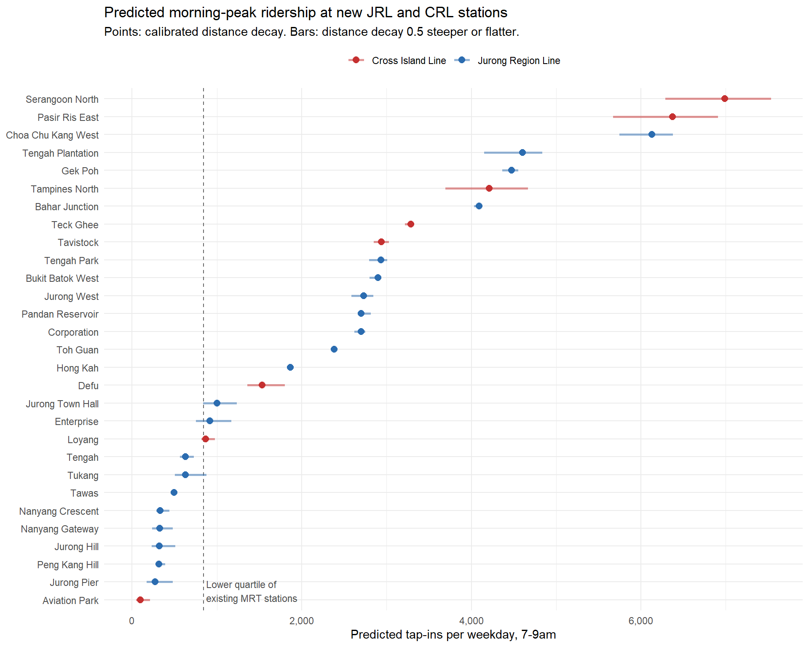
Of the 29 new stations, 9 are predicted below the benchmark: Aviation Park, Jurong Pier, Peng Kang Hill, Jurong Hill, Nanyang Gateway, Nanyang Crescent, Tawas, Tukang and Tengah. The ranking of the new stations is almost identical across the three values of \(\lambda\) (Spearman correlation of at least 0.977). Only Tukang, Loyang, Enterprise and Jurong Town Hall have bars that cross the benchmark, so the list is largely unaffected by the choice of \(\lambda\).
Low predicted morning tap-ins do not by themselves mean a station is not worth opening. They must be read together with the limitations identified in Sections 5.7 and 5.8:
- Several low-ridership stations are destinations, not origins. Nanyang Gateway and Nanyang Crescent serve Nanyang Technological University, and Tukang, Jurong Hill and Jurong Pier serve industrial estates. Their main role in the morning is to receive arriving passengers, which morning tap-ins do not measure. Many of their users, such as students in campus hostels and foreign workers in dormitories, are also not in the resident population.
- Some catchments are still growing. Population is held at June 2026, while Tengah’s new town is still being built and occupied. Predictions for the Tengah stations are therefore conservative.
- Aviation Park serves Changi Aviation Park and the wider Changi East area, where demand comes from workplaces rather than residents, which a residential model cannot capture.
The stations predicted to have low ridership are therefore candidates for closer examination, for example of employment and student populations, rather than automatic candidates for delayed opening.
6.2 Impact on the Ridership of Existing Stations
To isolate the effect of the new lines, the M2 model is run twice with the same parameters and the same population: once with the existing network and once with the future network. The difference for each existing station is therefore due only to the new stations. Errors in the model affect both runs and largely cancel.
The predicted percentage change is then applied to each station’s observed ridership. This gives an expected future ridership that starts from what the station actually carries today, rather than from the model’s prediction.
Section 5.7 showed that the model fits some stations poorly, for example the Tuas stations, whose riders are mostly non-residents. A predicted change at such a station is unreliable, because the model does not represent who actually uses it. Stations whose predicted ridership in Section 5.7 was within a factor of two of observed ridership (a ratio between 0.5 and 2) are therefore flagged as reliable, and the others as poorly fitted.
The future distance matrix lists the existing stations first, in the same order as the existing network, so the two sets of predictions can be compared position by position. This is checked with stopifnot().
stopifnot(identical(dest_future_df$station[1:n_exist], dest_df$station))
T_future <- predict_totals(D_future, X_future %*% gamma_m2, lambda_m2)
new_stations <- dest_future %>% filter(status == "Upcoming")
dist_to_new <- apply(st_distance(dest_existing, new_stations), 1, min) / 1000
impact <- dest_df %>%
select(station, mode, lines, observed = am_tapins) %>%
mutate(pred_now = T_m2,
pred_future = T_future[1:n_exist],
change_pct = (pred_future / pred_now - 1) * 100,
expected = observed * pred_future / pred_now,
reliable = between(pred_now / observed, 0.5, 2),
gains_line = station %in% interchange_gain$station,
dist_new_km = dist_to_new[match(station, dest_existing$station)],
dist_band = cut(dist_new_km, breaks = c(0, 1, 2, 3, 5, Inf),
labels = c("Under 1 km", "1-2 km", "2-3 km", "3-5 km", "Over 5 km"),
include.lowest = TRUE))
impact %>% count(reliable)# A tibble: 2 × 2
reliable n
<lgl> <int>
1 FALSE 39
2 TRUE 145145 of the 184 existing stations are reliably fitted. Together, the 29 new stations are predicted to carry 69,053 morning-peak tap-ins per weekday, 12.1% of the network total. Since the total is held constant (Section 5.1.3), these riders are drawn from existing stations.
6.2.1 Stations most affected
impact %>%
filter(reliable, !gains_line) %>%
arrange(change_pct) %>%
head(12) %>%
mutate(station = str_to_title(station),
across(c(observed, expected), round),
change_pct = round(change_pct, 1),
dist_new_km = round(dist_new_km, 1)) %>%
select(station, lines, observed, expected, change_pct, dist_new_km) %>%
kable(col.names = c("Station", "Lines", "Observed now", "Expected after",
"Change (%)", "Nearest new station (km)"))| Station | Lines | Observed now | Expected after | Change (%) | Nearest new station (km) |
|---|---|---|---|---|---|
| Joo Koon | EWL | 1219 | 405 | -66.8 | 1.7 |
| Gul Circle | EWL | 296 | 111 | -62.5 | 3.3 |
| Chinese Garden | EWL | 5619 | 2346 | -58.2 | 0.8 |
| Lakeside | EWL | 12313 | 5365 | -56.4 | 1.3 |
| Pioneer | EWL | 10792 | 4911 | -54.5 | 1.1 |
| Bukit Batok | NSL | 8389 | 5280 | -37.1 | 1.2 |
| Bukit Gombak | NSL | 6589 | 4464 | -32.2 | 1.8 |
| Teck Whye | BPLRT | 574 | 400 | -30.3 | 1.5 |
| Kovan | NEL | 5386 | 3833 | -28.8 | 1.6 |
| Tampines East | DTL | 7356 | 5472 | -25.6 | 1.4 |
| Mayflower | TEL | 4613 | 3496 | -24.2 | 1.0 |
| Upper Thomson | TEL | 1769 | 1355 | -23.4 | 1.7 |
impact %>%
filter(!reliable) %>%
arrange(change_pct) %>%
head(6) %>%
mutate(station = str_to_title(station), change_pct = round(change_pct, 1),
fit_ratio = round(pred_now / observed, 2)) %>%
select(station, lines, change_pct, fit_ratio) %>%
kable(col.names = c("Poorly fitted station", "Lines", "Change (%)",
"Predicted / observed (Section 5.7)"))| Poorly fitted station | Lines | Change (%) | Predicted / observed (Section 5.7) |
|---|---|---|---|
| Tuas Crescent | EWL | -60.3 | 0.42 |
| Tuas West Road | EWL | -59.2 | 0.25 |
| Tuas Link | EWL | -59.1 | 0.07 |
| South View | BPLRT | -53.5 | 0.41 |
| Changi Airport | EWL | -44.1 | 0.28 |
| Keat Hong | BPLRT | -38.6 | 0.46 |
Among reliably fitted stations, the largest losses are on the East-West Line between Jurong East and Joo Koon, such as Chinese Garden, Lakeside and Pioneer, and on the North-South Line around Bukit Batok. These stations currently serve Jurong West, Bukit Batok and Tengah residents who will have a JRL station closer to home.
The second table lists poorly fitted stations with large predicted losses, such as the Tuas stations and Changi Airport. These losses should not be relied on. The model predicts these stations’ riders to be distant residents who will switch to a new station, but their actual riders are mostly local workers and travellers, who are unlikely to be affected.
6.2.2 Interchanges that gain a line
impact %>%
filter(gains_line) %>%
arrange(desc(change_pct)) %>%
mutate(station = str_to_title(station),
across(c(observed, expected), round),
change_pct = round(change_pct, 1)) %>%
select(station, lines, observed, expected, change_pct) %>%
kable(col.names = c("Station", "Current lines", "Observed now", "Expected after",
"Change (%)"))| Station | Current lines | Observed now | Expected after | Change (%) |
|---|---|---|---|---|
| Bright Hill | TEL | 1701 | 2358 | 38.6 |
| Hougang | NEL | 9239 | 12176 | 31.8 |
| Ang Mo Kio | NSL | 10164 | 11635 | 14.5 |
| Pasir Ris | EWL | 10309 | 10522 | 2.1 |
| Choa Chu Kang | BPLRT, NSL | 9717 | 8049 | -17.2 |
| Jurong East | EWL, NSL | 6201 | 4132 | -33.4 |
| Boon Lay | EWL | 10752 | 6860 | -36.2 |
The seven interchanges respond in two different ways:
- On the CRL, Bright Hill, Hougang and Ang Mo Kio gain riders, and Pasir Ris holds steady. The extra line makes them more attractive (Section 5.5), and only a few new CRL stations nearby compete with them.
- On the JRL, Boon Lay, Jurong East and Choa Chu Kang lose riders despite gaining a line. The JRL places many new stations around them, in Jurong West, Tengah and the Jurong Lake District. Residents who currently travel to these interchanges will be able to board closer to home and transfer there instead.
The second group has an operational implication. These interchanges are predicted to lose tap-ins because their riders will board elsewhere, but those riders will still pass through them when transferring between the JRL and the East-West or North-South Line. Interchange transfers are not measured by tap-ins, so the stations may well remain as busy as before.
6.2.3 Impact by distance from the new lines
If the new stations compete with existing ones for residents, the impact should fade with distance from the new lines. The box plot groups the reliably fitted existing stations, excluding the seven interchanges, by the distance to their nearest new station.
background <- impact %>%
filter(reliable, !gains_line, dist_new_km > 5) %>%
pull(change_pct) %>%
median()
p_dist <- ggplot(impact %>% filter(reliable, !gains_line),
aes(x = dist_band, y = change_pct)) +
geom_hline(yintercept = 0, colour = "grey50") +
geom_hline(yintercept = background, colour = "grey50", linetype = "dashed") +
geom_boxplot(fill = "#bee3f8", outlier.shape = NA) +
geom_jitter(width = 0.15, size = 1.2, alpha = 0.6, colour = "#2b6cb0") +
stat_summary(fun = mean, geom = "point", colour = "red", size = 2.5) +
labs(x = "Distance to the nearest new JRL or CRL station",
y = "Predicted change in morning-peak tap-ins (%)",
title = "Impact of the new stations on existing stations, by distance",
subtitle = "Reliably fitted stations, excluding interchanges. Red: mean. Dashed: median beyond 5 km.") +
theme_minimal()
p_dist
impact %>%
filter(reliable, !gains_line) %>%
group_by(dist_band) %>%
summarise(stations = n(), median_change = round(median(change_pct), 1),
largest_loss = round(min(change_pct), 1))# A tibble: 5 × 4
dist_band stations median_change largest_loss
<fct> <int> <dbl> <dbl>
1 Under 1 km 1 -58.2 -58.2
2 1-2 km 15 -25.6 -66.8
3 2-3 km 18 -12.9 -18.6
4 3-5 km 40 -6.5 -62.5
5 Over 5 km 64 -6.1 -13.9The impact clearly fades with distance. The median change is largest within 2 km of a new station, and levels off beyond about 3 km. Only one reliably fitted station that is not an interchange lies within 1 km of a new station, so that group should not be read on its own.
The two largest losses need caution. Joo Koon (-66.8%) and Gul Circle (-62.5%), the outlier in the 3-5 km band. Few residents live near either station, so the model attributes most of their riders to residents of Jurong West several kilometres away, who are exactly the residents predicted to switch to the JRL. As with the Tuas stations (Section 5.7), their actual morning riders are largely workers in the western industrial estates, so these losses are likely to be overstated.
Beyond 5 km, the median change does not reach zero but stays at about -6.1%. This is a property of the model rather than a real effect, and it has two causes:
- The total number of trips is held constant. The 12.1% of trips taken by the new stations must therefore come from existing ones.
- New options draw proportionally from all stations. In the Huff and MCI models, a new alternative takes its share proportionally from every station a resident might use, however unlikely. This is the independence-of-irrelevant-alternatives property of these models. So a resident in Jurong who switches to a JRL station slightly reduces the predicted ridership of every station in the network, including those in the CBD.
The background loss of about 6% should therefore be read as the baseline. Only losses well beyond it reflect genuine local competition.
6.2.4 Checking an alternative choice set
One way to remove the background loss would be to restrict each resident’s choice to stations within a cutoff distance, so that distant stations are not affected at all. To test this alternative, M2 is recalibrated with stations beyond 3 km and 5 km excluded from each resident’s choice set. Each resident’s nearest station is always kept, so that every hexagon has at least one option.
huff_prob_cut <- function(D, logA, lambda, cutoff) {
U <- sweep(lambda * log(D), 2, logA, "+")
U[D > pmax(cutoff, apply(D, 1, min))] <- -Inf # exclude stations beyond the cutoff
U <- U - apply(U, 1, max)
P <- exp(U)
P / rowSums(P)
}
choice_set_check <- map_dfr(c(5000, 3000), \(cutoff) {
totals <- function(p) as.vector(crossprod(
huff_prob_cut(D_exist, X_exist %*% p[-1], p[1], cutoff), C_i * trip_rate))
fit <- optim(c(-2, rep(0, length(vars_m2))),
\(p) log_loss(pmax(totals(p), 1e-6), T_obs),
method = "BFGS", control = list(maxit = 500))
T_hat <- totals(fit$par)
tibble(choice_set = paste("Stations within", cutoff / 1000, "km"),
lambda = fit$par[1],
pseudo_r2 = cor(T_hat, T_obs)^2,
r2_log = cor(log(pmax(T_hat, 1e-6)), log(T_obs))^2,
stations_with_no_riders = sum(T_hat < 1))
})
bind_rows(fit_stats(T_m2, T_obs) %>%
transmute(choice_set = "All stations (M2)", lambda = lambda_m2,
pseudo_r2, r2_log, stations_with_no_riders = sum(T_m2 < 1)),
choice_set_check) %>%
mutate(across(where(is.numeric), \(x) round(x, 2))) %>%
kable()| choice_set | lambda | pseudo_r2 | r2_log | stations_with_no_riders |
|---|---|---|---|---|
| All stations (M2) | -2.52 | 0.83 | 0.73 | 0 |
| Stations within 5 km | -1.99 | 0.81 | 0.20 | 2 |
| Stations within 3 km | -1.54 | 0.81 | 0.17 | 4 |
Restricting the choice set makes the model worse. The fit on the log scale falls sharply, and some stations, such as those in Tuas, receive no riders at all because no residents live within the cutoff. The unrestricted choice set is therefore kept, and the background loss is treated as a known limitation of the model, not removed by an arbitrary cutoff.
6.2.5 Mapping the impact
The map shows the predicted change at each existing station. Classes are set symmetrically around zero, so losses and gains of the same size are shown with equal intensity. Poorly fitted stations are shown in grey.
impact_sf <- dest_existing %>%
select(station) %>%
left_join(impact, by = "station") %>%
mutate(change_class = cut(change_pct,
breaks = c(-Inf, -30, -15, -5, 5, 15, Inf),
labels = c("Loss over 30%", "Loss 15-30%", "Loss 5-15%",
"Within 5%", "Gain 5-15%", "Gain over 15%")))
m_impact <- tm_shape(hex_land) +
tm_polygons(fill = "grey95", col = "grey85", lwd = 0.2) +
tm_shape(impact_sf %>% filter(reliable)) +
tm_symbols(fill = "change_class",
fill.scale = tm_scale_categorical(
values = c("#67001f", "#d6604d", "#fddbc7", "#f7f7f7", "#92c5de", "#2166ac")),
fill.legend = tm_legend(title = "Existing stations:\npredicted change"),
col = "grey30", size = 0.55) +
tm_shape(impact_sf %>% filter(!reliable)) +
tm_symbols(fill = "grey70", col = "grey50", size = 0.35) +
tm_shape(new_stations) +
tm_symbols(fill = "black", shape = 17, size = 0.45) +
tm_add_legend(type = "symbols",
labels = c("Poorly fitted existing station", "New JRL / CRL station"),
fill = c("grey70", "black"), shape = c(21, 17)) +
tm_title("Predicted impact of the JRL and CRL on existing stations") +
tm_compass(type = "8star", size = 2, position = c("right", "top")) +
tm_scalebar(position = c("left", "bottom")) +
tm_layout(frame = TRUE, legend.position = c("right", "bottom"))
m_impact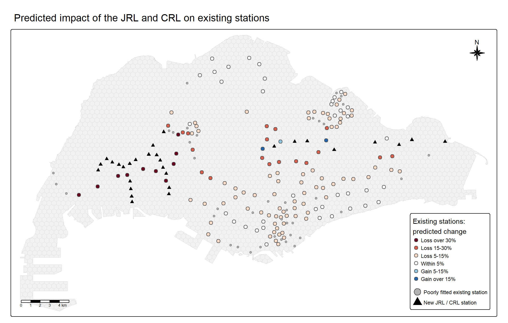
The losses form two clusters, one along each new line. In the west, the JRL draws riders from the East-West Line, North-South Line and Bukit Panjang LRT stations around Jurong, Bukit Batok and Choa Chu Kang. In the north-east and east, the CRL draws riders from stations around Kovan and Serangoon and around Tampines and Pasir Ris. Further west, the Thomson-East Coast Line stations at Mayflower and Upper Thomson also lose riders (-24% and -23%) to the new Teck Ghee station and the Bright Hill interchange. The CRL interchanges at Hougang, Ang Mo Kio and Bright Hill stand out as the main gainers. Elsewhere, changes stay close to the background level.
6.3 Impact on Market Areas
6.3.2 Changes in station market areas
As in Kam (2026, Chapter 18), a station’s market area is the set of hexagons for which it is the most likely choice, found with max.col(). Comparing market areas before and after shows where the new stations take over and where existing stations change.
hex_map <- hex_map %>%
mutate(area_change = case_when(
is.na(top_now) ~ NA_character_,
top_now == top_future ~ "Same station",
top_future %in% dest_future_df$station[new_idx] ~ "Taken over by a new station",
TRUE ~ "Switched to another existing station"))
m_area <- tm_shape(hex_map) +
tm_polygons(fill = "area_change",
fill.scale = tm_scale_categorical(
levels = c("Same station", "Taken over by a new station",
"Switched to another existing station"),
values = c("grey85", "#6b46c1", "#dd6b20"),
value.na = "grey97", label.na = "No residents"),
fill.legend = tm_legend(title = "Most likely station"),
col = "white", lwd = 0.2) +
tm_shape(new_stations) +
tm_symbols(fill = "black", shape = 17, size = 0.35) +
tm_title("Change in each hexagon's most likely station after the JRL and CRL open") +
tm_compass(type = "8star", size = 2, position = c("right", "top")) +
tm_scalebar(position = c("left", "bottom")) +
tm_layout(frame = TRUE, legend.position = c("right", "bottom"))
m_area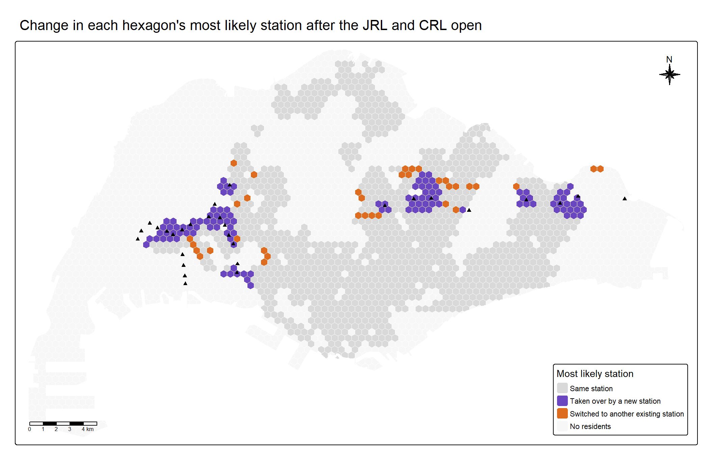
hex_map %>%
st_drop_geometry() %>%
filter(!is.na(area_change), area_change != "Same station") %>%
count(area_change)# A tibble: 2 × 2
area_change n
<chr> <int>
1 Switched to another existing station 35
2 Taken over by a new station 112hex_map %>% # which existing stations gain market area
st_drop_geometry() %>%
filter(area_change == "Switched to another existing station") %>%
count(top_future, sort = TRUE)# A tibble: 7 × 2
top_future n
<chr> <int>
1 HOUGANG 8
2 BRIGHT HILL 6
3 ANG MO KIO 5
4 JURONG EAST 5
5 BOON LAY 4
6 CHOA CHU KANG 4
7 PASIR RIS 3147 hexagons change their most likely station. Most are taken over by a new station. The rest switch to another existing station, and all of these switch to one of the seven interchanges that gain a line: with the extra line, these stations extend their market areas into those of their neighbours.
6.3.3 How contested the market areas are
The highest probability in each hexagon shows how dominant its most likely station is. Values close to 1 mean almost all residents use one station. Lower values mean residents are split between several stations. The same classes are used before and after, so the two maps can be compared directly.
dominance <- bind_rows(
hex_map %>% transmute(network = "Before: existing network", max_p = max_p_now),
hex_map %>% transmute(network = "After: with JRL and CRL", max_p = max_p_future)) %>%
mutate(network = factor(network, levels = c("Before: existing network",
"After: with JRL and CRL")))
m_dom <- tm_shape(dominance) +
tm_polygons(fill = "max_p",
fill.scale = tm_scale_intervals(
breaks = c(0, 0.3, 0.5, 0.7, 0.9, 1),
labels = c("Under 0.3", "0.3-0.5", "0.5-0.7", "0.7-0.9", "Over 0.9"),
values = "brewer.yl_gn_bu", value.na = "grey95", label.na = "No residents"),
fill.legend = tm_legend(title = "Probability of\nmost likely station"),
col = "grey85", lwd = 0.1) +
tm_facets(by = "network", ncol = 2) +
tm_layout(frame = TRUE, legend.outside = TRUE, legend.outside.position = "right")
m_dom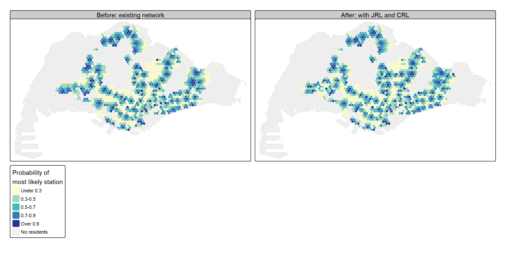
To see where dominance changes, hexagons are grouped by the share of their trips that go to new stations:
dom_change <- hex_change %>%
mutate(exposure = cut(share_to_new, breaks = c(-Inf, 5, 25, 50, Inf),
labels = c("Under 5%", "5-25%", "25-50%", "Over 50%"))) %>%
select(hex_id, exposure, Before = max_p_now, After = max_p_future) %>%
pivot_longer(c(Before, After), names_to = "network", values_to = "max_p") %>%
mutate(network = factor(network, levels = c("Before", "After")))
p_dom <- ggplot(dom_change, aes(x = exposure, y = max_p, fill = network)) +
geom_boxplot(outlier.size = 0.5) +
scale_fill_manual(values = c(Before = "#e2e8f0", After = "#9ae6b4")) +
labs(x = "Share of the hexagon's trips going to new stations",
y = "Probability of most likely station", fill = NULL,
title = "Dominance of the most likely station, before and after") +
theme_minimal() +
theme(legend.position = "top")
p_dom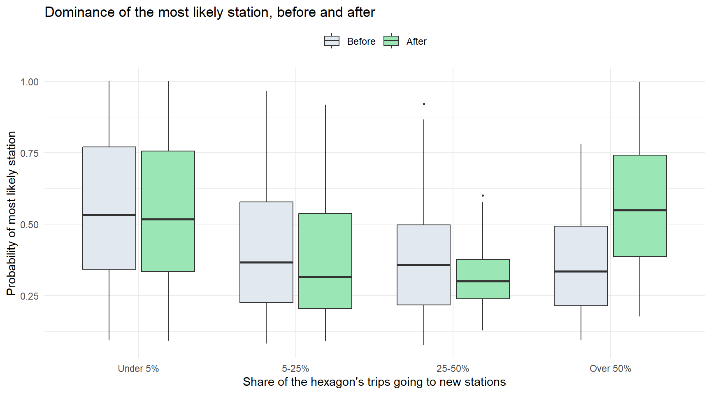
dom_change %>%
group_by(exposure, network) %>%
summarise(hexagons = n(), median_max_p = round(median(max_p), 2), .groups = "drop") %>%
pivot_wider(names_from = network, values_from = median_max_p)# A tibble: 4 × 4
exposure hexagons Before After
<fct> <int> <dbl> <dbl>
1 Under 5% 838 0.53 0.52
2 5-25% 211 0.37 0.32
3 25-50% 75 0.36 0.3
4 Over 50% 87 0.33 0.55Before the new lines open, about half of all populated hexagons (656 of 1,211) are already contested. Their most likely station has a probability below 0.5, so residents are split between two or more stations.
The new lines change this in two opposite ways:
- Where a new station takes over most trips (over 50%), dominance rises. These hexagons, mostly in Tengah and western Jurong, currently lie between stations. Their residents gain a clear nearest station.
- Where a new station takes a partial share (5-50%), dominance falls. These hexagons already had a station nearby, and the new station adds a second option at a similar distance, so residents become more evenly split.
Across the whole island the two effects largely cancel, which is why the two maps look similar outside the corridors of the new lines.
6.4 Summary of Findings
Objective 1: calibrating the model. The MCI model explains most of the variation in morning-peak tap-ins at existing stations (pseudo-R² of 0.83, against 0.53 for distance alone). Residents strongly prefer nearby stations (\(\lambda\) = -2.52). Beyond distance, the attributes that matter are the number of lines, MRT rather than LRT service, feeder bus access and, to a lesser extent, shopping around the station.
Objective 2: predicting ridership at the new stations. The 29 new stations are predicted to carry 12.1% of morning-peak tap-ins. Stations in established housing areas, such as Serangoon North, Pasir Ris East and Choa Chu Kang West, are predicted to be the busiest. Nine stations are predicted below the ridership of the least-used quarter of existing MRT stations. Most of them serve the NTU campus, industrial estates or the future airport area, where demand comes from destinations and non-residents that this model does not capture. The holdout test suggests ridership in the opening years will be lower than predicted.
Objective 3: impact on existing stations. The impact is concentrated along the new lines and fades within about 3 km. The largest losses are on the East-West Line between Jurong East and Joo Koon and on the North-South Line around Bukit Batok. Among the interchanges that gain a line, the CRL interchanges at Hougang, Ang Mo Kio and Bright Hill gain riders. The JRL interchanges at Boon Lay, Jurong East and Choa Chu Kang lose tap-ins, but they will carry new transfer traffic that tap-ins do not measure. Beyond the new corridors, the predicted changes reflect a small background loss that comes from the model’s structure rather than real competition.
7. Value-Added Analysis: Change in Access to MRT/LRT
Sections 5 and 6 view the new lines from the stations’ side: how many riders each station gains or loses. This section views them from the residents’ side: how much rail service each hexagon can reach, after accounting for the other residents competing for the same stations. This links the exercise to urban sustainability, as it shows which communities gain access to rail and whether the new lines reach areas that were poorly served. It also relates to the government’s target of 8 in 10 households being within a 10-minute walk of a train station by the 2030s (Ministry of Transport, 2024).
7.1 Method
Access is measured with the two-step floating catchment area (2SFCA) method (Luo & Wang, 2003). Each station’s supply is first divided among the residents within its catchment. Each hexagon’s accessibility is then the sum of the shares of the stations it can reach.
The original method counts a resident in full at every station within reach. Where catchments overlap, which is common in Singapore (Section 6.3.3), this counts the same residents several times and understates each station’s supply per resident. Luo (2014) addresses this by sharing each resident’s demand among the reachable stations using Huff probabilities. The same approach is used here, with the probabilities from the calibrated M2 model (Section 5.5). For hexagon \(i\) and station \(j\), with catchment distance \(d_0\):
\[ P^*_{ij} = \frac{P_{ij}}{\sum_{k:\, d_{ik} \le d_0} P_{ik}} \quad \text{for } d_{ij} \le d_0 \]
\[ R_j = \frac{S_j}{\sum_{i:\, d_{ij} \le d_0} P^*_{ij}\, C_i}, \qquad A_i = \sum_{j:\, d_{ij} \le d_0} P^*_{ij}\, R_j \]
\(P^*_{ij}\) is the Huff probability rescaled so that it sums to 1 across the stations a resident can reach. \(R_j\) is station \(j\)’s supply per expected user (step 1). \(A_i\) is the accessibility of hexagon \(i\) (step 2). A hexagon with no station within \(d_0\) has an accessibility of 0.
| Component | Choice | Reason |
|---|---|---|
| Supply \(S_j\) | Number of lines at the station (n_lines) |
In 2SFCA, supply is a capacity measure (Luo & Wang, 2003), and each line adds trains and seats. Service frequency and train capacity are not available. |
| Demand \(C_i\) | Residents aged 15-64 in each hexagon | The same market potential as in the model (Section 4.7) |
| Selection probability \(P_{ij}\) | M2 Huff probabilities | Shares each resident’s demand among reachable stations (Luo, 2014) |
| Catchment \(d_0\) | 800 m, with 1 km as a sensitivity check | About a 10-minute walk, the basis of the government’s target. In a Singapore survey, about 60% of MRT passengers walked to their station, over 608 m on average (Olszewski & Wibowo, 2005). |
The 800 m catchment differs from the 400 m radius used for the attractiveness variables in Section 4.9. That radius describes what lies immediately around a station, whereas the catchment describes how far residents are willing to walk to it.
Two caveats apply. First, distances are straight-line. Olszewski and Wibowo (2005) found that the effort of walking to Singapore stations is 20% to 39% greater than the straight-line distance suggests, so an 800 m straight-line catchment corresponds to somewhat more than a 10-minute walk. The coverage figures below should therefore be read as an upper bound. Second, an LRT line counts the same as an MRT line, although LRT trains carry far fewer passengers.
Accessibility is expressed in rail lines per 100,000 residents aged 15-64.
7.2 Computing Accessibility
NoteAI Use Disclosure
AI tools were used to adapt the Huff-based two-step floating catchment area method to the station network and to draft the R function fca_access() and the code that summarises and maps the results. The output was reviewed and run by the author to verify correctness against the study data.
fca_access() implements the two steps with matrices, as in Section 5.2. The distance matrices D_exist and D_future and the probability matrices P_now and P_future from Section 6.3 have one row per hexagon and one column per station, in the same order, so the function can be applied to both networks unchanged.
fca_access <- function(P, D, supply, cutoff) {
W <- P * (D <= cutoff) # Huff probabilities, kept only for stations within the cutoff
W <- W / rowSums(W) # rescaled to sum to 1 across the reachable stations
W[is.na(W)] <- 0 # hexagons with no station within the cutoff
demand <- as.vector(crossprod(W, C_i)) # step 1: residents expected at each station
ratio <- if_else(demand > 0, supply / demand, 0) # lines per resident at each station
as.vector(W %*% ratio) # step 2: accessibility of each hexagon
}
cutoff <- 800
access <- tibble(hex_id = hex_ids,
pop = C_i,
before = fca_access(P_now, D_exist, dest_df$n_lines, cutoff) * 1e5,
after = fca_access(P_future, D_future, dest_future_df$n_lines, cutoff) * 1e5) %>%
mutate(change = after - before)Because each resident’s probabilities sum to 1, every line within reach of at least one resident is shared out in full. Accessibility weighted by population should therefore add up to the number of lines reached, which is checked below.
c(lines_reached = sum(dest_df$n_lines[colSums(D_exist <= cutoff) > 0]),
from_accessibility = sum(access$pop * access$before) / 1e5) lines_reached from_accessibility
205 205 The two values are equal, which confirms that the function shares supply correctly.
7.3 Overall Change
acc_summary <- access %>%
pivot_longer(c(before, after), names_to = "network", values_to = "access") %>%
group_by(network = factor(network, levels = c("before", "after"),
labels = c("Before", "After"))) %>%
summarise(residents_within = sum(pop[access > 0]),
share_within = 100 * residents_within / sum(pop),
hexagons_without = sum(access == 0),
mean_access = weighted.mean(access, pop))
acc_summary %>%
mutate(residents_within = scales::comma(round(residents_within)),
across(c(share_within, mean_access), \(x) round(x, 1))) %>%
kable(col.names = c("Network", "Residents within 800 m", "Share of residents (%)",
"Populated hexagons with no station",
"Mean accessibility (lines per 100,000)"))| Network | Residents within 800 m | Share of residents (%) | Populated hexagons with no station | Mean accessibility (lines per 100,000) |
|---|---|---|---|---|
| Before | 2,031,479 | 71.6 | 414 | 7.2 |
| After | 2,260,936 | 79.7 | 334 | 8.3 |
access %>%
summarise(newly_within = sum(before == 0 & after > 0),
higher = sum(before > 0 & change > 0.01),
unchanged = sum(abs(change) <= 0.01),
lower = sum(change < -0.01))# A tibble: 1 × 4
newly_within higher unchanged lower
<int> <int> <int> <int>
1 80 103 1025 3The share of residents aged 15-64 within 800 m of a station rises from 71.6% to 79.7%, an additional 229,458 residents. In all, 80 hexagons that currently have no station within 800 m gain one.
Most hexagons are unaffected. Unlike Section 6.2, where every station lost a small share of riders, accessibility changes only where a new station or an added line lies within 800 m. The catchment limits competition between stations to residents who can actually reach them, so the 2SFCA measure has no background effect.
7.4 Mapping Accessibility
The before and after maps use the same classes, so they can be compared directly.
access_map <- bind_rows(
hex_land %>% select(hex_id) %>%
left_join(access %>% select(hex_id, access = before), by = "hex_id") %>%
mutate(network = "Before: Existing network"),
hex_land %>% select(hex_id) %>%
left_join(access %>% select(hex_id, access = after), by = "hex_id") %>%
mutate(network = "After: With JRL and CRL")) %>%
mutate(network = factor(network, levels = c("Before: Existing network",
"After: With JRL and CRL")))
m_access <- tm_shape(access_map) +
tm_polygons(fill = "access",
fill.scale = tm_scale_intervals(
breaks = c(0, 0.001, 3, 5, 10, 20, 50, Inf),
labels = c("No station within 800 m", "Under 3", "3 to 5", "5 to 10",
"10 to 20", "20 to 50", "50 or more"),
values = c("grey75", "#fdd49e", "#fdbb84", "#fc8d59", "#e34a33", "#b30000", "#7f0000"),
value.na = "grey97", label.na = "No residents"),
fill.legend = tm_legend(title = "Rail lines per\n100,000 residents"),
col = "white", lwd = 0.1) +
tm_title("Rail accessibility before and after the JRL and CRL open") +
tm_facets(by = "network", ncol = 2) +
tm_layout(frame = TRUE, legend.outside = TRUE, legend.outside.position = "right")
m_access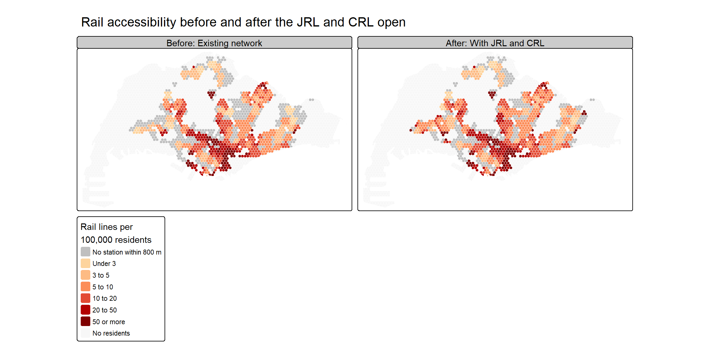
Accessibility is highest in the city centre, where interchanges with several lines serve relatively few residents, and lowest in large housing estates far from an interchange. Before the new lines open, the largest grey gaps with no station within 800 m are in the west, in Tengah, Jurong West and Jurong East, and in the north-east and east, in Serangoon, Hougang and Pasir Ris (Section 7.5). In the after map, most of these gaps fill in along the JRL and CRL corridors. The grey areas that remain lie away from both lines, which these two lines were not designed to serve.
access_change <- hex_land %>%
select(hex_id) %>%
left_join(access, by = "hex_id") %>%
mutate(change_class = case_when(
is.na(change) ~ NA_character_,
before == 0 & after > 0 ~ "Newly within 800 m of a station",
change > 0.01 ~ "Higher",
change < -0.01 ~ "Lower",
TRUE ~ "No change"))
m_change <- tm_shape(access_change) +
tm_polygons(fill = "change_class",
fill.scale = tm_scale_categorical(
levels = c("Newly within 800 m of a station", "Higher", "No change", "Lower"),
values = c("#6b46c1", "#b794f4", "grey85", "#dd6b20"),
value.na = "grey97", label.na = "No residents"),
fill.legend = tm_legend(title = "Change in rail accessibility"),
col = "white", lwd = 0.2) +
tm_shape(new_stations) +
tm_symbols(fill = "black", shape = 17, size = 0.35) +
tm_title("Change in rail accessibility after the JRL and CRL open") +
tm_compass(type = "8star", size = 2, position = c("right", "top")) +
tm_scalebar(position = c("left", "bottom")) +
tm_layout(frame = TRUE, legend.position = c("right", "bottom"))
m_change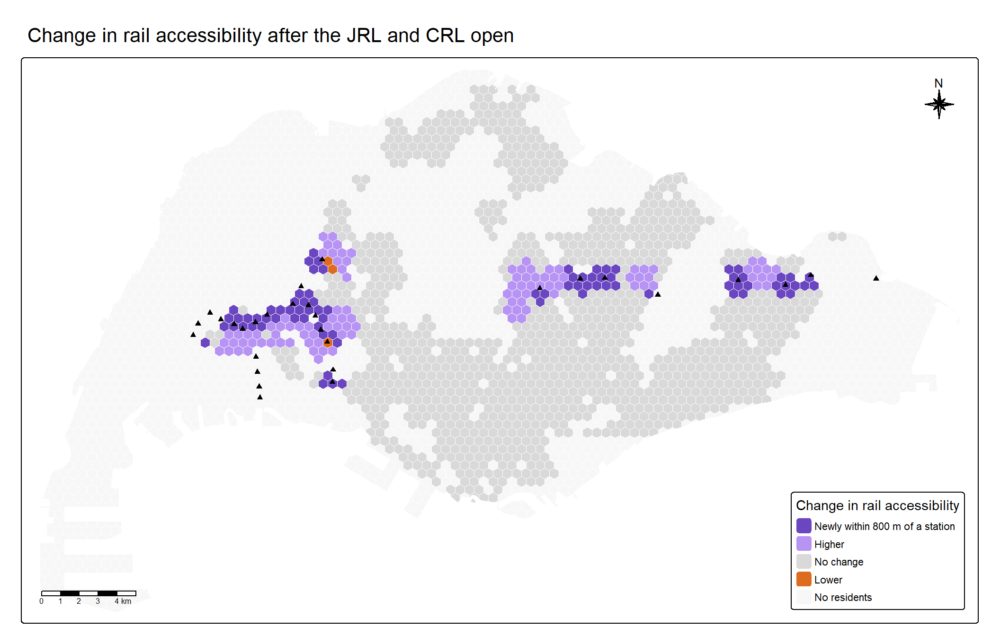
The gains form two corridors: the JRL in the west, around Tengah, Jurong West and Jurong East, and the CRL in the north-east, from Ang Mo Kio to Pasir Ris. Hexagons newly within 800 m of a station lie closest to the new stations. Hexagons with higher accessibility surround them, where residents already had a station and gain a second option or an interchange with an extra line.
no_residents_800 <- dest_future_df$station[new_idx][colSums(D_future[, new_idx] <= cutoff) == 0]
str_to_title(no_residents_800)[1] "Aviation Park" "Jurong Hill" "Jurong Pier" "Nanyang Crescent"
[5] "Nanyang Gateway" "Tukang" Of the 29 new stations, 6 have no populated hexagon within 800 m, and all of them are among the 9 stations predicted below the benchmark in Section 6.1. This confirms, from the residents’ side, why their predicted morning ridership is low: they serve industrial estates, the university campus and the airport area, where demand comes from workers and students rather than from residents nearby.
Only 3 hexagons have lower accessibility. These lie next to an existing station with few users, such as South View LRT, that gains a busy new neighbour, such as Choa Chu Kang West. Part of their residents’ demand moves to the new station, which is shared by many more residents, so their average supply per resident falls. These residents gain an extra option, so a lower score here does not mean worse service. It is a known property of supply-to-demand measures such as 2SFCA.
7.5 Change by Planning Area
To summarise the change for planning, each hexagon is assigned to the planning area its representative point lies in, using st_join(). Accessibility is then averaged across each planning area’s hexagons, weighted by residents. Planning areas with fewer than 5,000 residents aged 15-64 are left out, as a few hexagons would dominate their averages.
hex_pa <- origins %>%
select(hex_id) %>%
st_join(mpsz_study %>% select(PLN_AREA_N), join = st_intersects) %>%
st_drop_geometry()
sum(is.na(hex_pa$PLN_AREA_N)) # hexagons not assigned to a planning area[1] 0pa_access <- access %>%
left_join(hex_pa, by = "hex_id") %>%
group_by(PLN_AREA_N) %>%
summarise(residents = sum(pop),
within_before = 100 * sum(pop[before > 0]) / residents,
within_after = 100 * sum(pop[after > 0]) / residents,
access_before = weighted.mean(before, pop),
access_after = weighted.mean(after, pop),
.groups = "drop") %>%
mutate(change = access_after - access_before)
pa_access %>%
filter(residents >= 5000, change > 0.01) %>%
arrange(desc(change)) %>%
mutate(PLN_AREA_N = str_to_title(PLN_AREA_N),
residents = scales::comma(round(residents)),
across(where(is.numeric), \(x) round(x, 1))) %>%
kable(col.names = c("Planning area", "Residents aged 15-64",
"Within 800 m before (%)", "Within 800 m after (%)",
"Accessibility before", "Accessibility after", "Change"))| Planning area | Residents aged 15-64 | Within 800 m before (%) | Within 800 m after (%) | Accessibility before | Accessibility after | Change |
|---|---|---|---|---|---|---|
| Jurong East | 50,905 | 49.8 | 90.2 | 6.0 | 15.5 | 9.6 |
| Tengah | 30,434 | 0.0 | 84.0 | 0.0 | 8.3 | 8.3 |
| Jurong West | 168,334 | 53.1 | 81.4 | 1.8 | 6.8 | 5.0 |
| Pasir Ris | 96,245 | 34.9 | 63.2 | 1.0 | 4.1 | 3.1 |
| Ang Mo Kio | 98,182 | 76.1 | 86.2 | 4.3 | 6.8 | 2.5 |
| Bishan | 56,369 | 59.9 | 73.9 | 8.4 | 10.5 | 2.2 |
| Hougang | 152,209 | 54.0 | 61.8 | 3.0 | 4.5 | 1.6 |
| Choa Chu Kang | 123,531 | 84.4 | 96.3 | 5.6 | 7.1 | 1.5 |
| Serangoon | 74,573 | 47.6 | 75.8 | 3.9 | 5.1 | 1.3 |
| Bukit Batok | 110,713 | 64.8 | 76.2 | 3.6 | 4.7 | 1.1 |
| Tampines | 201,064 | 68.4 | 82.9 | 4.1 | 4.6 | 0.5 |
Jurong East has the largest gain in accessibility. It benefits in two ways: its interchange gains a third line, and new JRL stations such as Toh Guan and Jurong Town Hall bring more of its residents within 800 m of a station (50% before, 90% after).
Tengah has the largest gain in coverage. None of its residents currently live within 800 m of a station, against 84% once the JRL opens. Its accessibility rises less than Jurong East’s because its new stations each serve one line and are shared among a large, growing population. Its level after the JRL opens (8.3 lines per 100,000 residents) is close to the island-wide average (8.3).
Jurong West and Pasir Ris follow. Both have large populations that are currently poorly served: about half of Jurong West’s residents and a third of Pasir Ris’s live within 800 m of a station. On the CRL, Ang Mo Kio, Bishan, Hougang and Serangoon gain from the new stations at Teck Ghee, Tavistock and Serangoon North and from the added line at their interchanges. Tampines gains in coverage (68% to 83%) but little in accessibility. Tampines North station mainly serves new residents who had no station within reach, so the supply per resident across the planning area barely changes.
7.6 Sensitivity to the Catchment Distance
The analysis is repeated with a 1 km catchment, and the five planning areas with the largest gains are compared.
access_1km <- tibble(hex_id = hex_ids,
pop = C_i,
before = fca_access(P_now, D_exist, dest_df$n_lines, 1000) * 1e5,
after = fca_access(P_future, D_future, dest_future_df$n_lines, 1000) * 1e5) %>%
mutate(change = after - before)
within_1km <- c(before = 100 * sum(C_i[access_1km$before > 0]) / sum(C_i),
after = 100 * sum(C_i[access_1km$after > 0]) / sum(C_i))
round(within_1km, 1)before after
83.5 90.8 bind_rows(access %>% mutate(cutoff = "800 m"),
access_1km %>% mutate(cutoff = "1 km")) %>%
left_join(hex_pa, by = "hex_id") %>%
group_by(cutoff, PLN_AREA_N) %>%
summarise(residents = sum(pop), change = weighted.mean(change, pop), .groups = "drop") %>%
filter(residents >= 5000) %>%
group_by(cutoff) %>%
slice_max(change, n = 5) %>%
mutate(rank = row_number(), PLN_AREA_N = str_to_title(PLN_AREA_N)) %>%
ungroup() %>%
select(rank, cutoff, PLN_AREA_N) %>%
pivot_wider(names_from = cutoff, values_from = PLN_AREA_N) %>%
select(rank, `800 m`, `1 km`) %>%
kable(col.names = c("Rank", "800 m catchment", "1 km catchment"))| Rank | 800 m catchment | 1 km catchment |
|---|---|---|
| 1 | Jurong East | Jurong East |
| 2 | Tengah | Tengah |
| 3 | Jurong West | Jurong West |
| 4 | Pasir Ris | Pasir Ris |
| 5 | Ang Mo Kio | Ang Mo Kio |
With a 1 km catchment, the share of residents within reach of a station rises from 83.5% to 90.8%. The levels are higher than at 800 m, as expected, but the increase is of a similar size. The five planning areas with the largest gains are the same under both catchments, in the same order. The conclusions therefore do not depend on the choice of catchment distance.
8. Limitations
The results should be read with the following limitations in mind. Most have been noted where they arise. They are brought together here, grouped by what they affect.
8.1 Who is modelled
- Residents only. The SingStat population covers citizens and permanent residents. Foreign workers in dormitories, students in campus hostels and cross-border commuters are not included. This explains why the Tuas stations and Kranji are strongly under-predicted (Section 5.7), and why new stations serving industrial estates and the university campus are likely to be under-predicted (Section 6.1).
- Population is held at June 2026. New housing completed after this date, notably in Tengah and the future Jurong Lake District, is not included, so predictions for stations in these areas are conservative.
- Locating residents. The 51 HDB blocks completed in 2026 are not yet in the building layer (Section 4.7.2). Private-housing residents are spread by land area, so condominiums are weighted the same per square metre as landed housing, and large residential parcels that are not yet developed receive residents in proportion to their size (Section 4.7.4). 3,640 private-housing residents could not be placed. All of these effects are confined within a subzone, as each subzone’s total is fixed.
8.2 What is measured
- Morning tap-ins only. Tap-ins measure where trips start. They miss a station’s role as a destination, which is why destination stations such as Expo and Keppel are over-predicted. They also miss transfers between lines, so the predicted losses at the JRL interchanges do not mean fewer passengers pass through them (Section 6.2.2).
- A short observation period. Ridership is averaged over three months. For the Circle Line Stage 6 stations, which were still building up ridership, only September is used.
8.3 How the model works
- Calibration from station totals. Origin-to-station flows are not available, so the model is calibrated on station totals: 184 observations for 10 parameters (Section 5.1.1). The standard errors are approximate, and strongly correlated variables, such as
shoppingandfood, cannot be fully separated (Section 5.5). - Independence of irrelevant alternatives. A new station draws riders proportionally from every station, producing a background loss of about 6.1% at stations far from the new lines (Section 6.2.3). Only losses well beyond this level should be read as genuine competition.
- Straight-line distance. Walking routes, barriers such as expressways and feeder bus services are not modelled. Actual walking effort in Singapore is 20% to 39% greater than straight-line distance suggests (Olszewski & Wibowo, 2005).
- Immediate adjustment. The model assumes residents switch to a more attractive station at once. The holdout test shows that recently opened stations are over-predicted by a median factor of 1.7 (Section 5.8), so the predictions describe ridership after travel habits have adjusted.
- Areal units. Results may change with the size of the hexagons (the modifiable areal unit problem). The 500 m cell size is finer than station spacing, but was not varied.
- Points of interest. OpenStreetMap coverage varies between areas, which affects the attractiveness variables.
- Accessibility measure. The 2SFCA analysis uses the number of lines as supply, so an LRT line counts the same as an MRT line, and service frequency is not represented (Section 7.1).
9. Conclusion and Recommendations
9.1 Conclusion
This exercise calibrated a probabilistic spatial interaction model of station choice for Singapore’s MRT and LRT network and used it to assess the Jurong Region Line and Cross Island Line Phase 1.
RQ1: How well does the model explain ridership, and what matters beyond distance? The MCI model explains most of the variation in weekday morning-peak tap-ins at the 184 existing stations (pseudo-R² of 0.83, against 0.53 for distance alone). Residents strongly prefer nearby stations (\(\lambda\) = -2.52, steeper than the conventional -2). Beyond distance, the number of lines, MRT rather than LRT service and feeder bus access make a station more attractive. The model’s largest errors point to riders it does not represent: non-resident workers and passengers arriving at destinations.
RQ2: What ridership can the new stations expect? The 29 new stations are predicted to carry 12.1% of morning-peak tap-ins once travel habits have adjusted. Stations in established housing areas, such as Serangoon North, Pasir Ris East and Choa Chu Kang West, are predicted to be the busiest. 9 stations are predicted below the lower quartile of existing MRT stations. Most of them serve industrial estates, the university campus or the airport area, where demand from workers and students is not captured by a residential model.
RQ3: How will the new lines affect existing stations and market areas? The impact is local. The largest losses are at East-West Line stations between Jurong East and Joo Koon and around Bukit Batok, and the effect fades within about 3 km of the new lines. The CRL interchanges at Bright Hill, Hougang and Ang Mo Kio gain riders, while the JRL interchanges lose tap-ins but will carry transfer traffic. 147 hexagons change their most likely station.
Access to rail. The share of residents aged 15–64 within 800 m of a station rises from 71.6% to 79.7%, with the largest gains in Tengah, Jurong East, Jurong West and Pasir Ris, areas that are currently among the least served.
9.2 Recommendations
- Treat low predictions as a prompt for further data, not as a verdict. Before decisions on the timing of opening or service levels at the 9 low-ridership stations, their demand should be estimated with employment, student and dormitory populations, which this model does not include.
- Plan for a ramp-up period. Based on the holdout test, ridership in the first months after opening may be well below the predictions. Service levels can be phased in and adjusted as observed ridership builds up.
- Review feeder bus services around the stations that lose riders. East-West Line stations between Jurong East and Joo Koon are predicted to lose a large share of their morning tap-ins to the JRL. Feeder services into these stations can be reviewed as residents switch to stations nearer home.
- Prepare the interchanges for transfer traffic. Bright Hill and Hougang are predicted to gain substantially in tap-ins, while Boon Lay, Jurong East and Choa Chu Kang will carry transfers between the JRL and the existing lines. Platform and concourse capacity at these stations should account for both.
9.3 Future Work
- Calibrate with origin-level data, such as anonymised fare-card records linked to home locations, so that the standard MCI estimation on market shares can be used.
- Add employment and student populations as a second source of demand, and model the evening peak to capture the destination role of stations.
- Replace straight-line distance with walking-network distance, and include feeder bus access time.
- Use projected population for the opening years of the JRL and CRL rather than current population.
- Test the sensitivity of the results to the hexagon size.
NoteAI Use Disclosure
AI tools were used to provide language assistance during the preparation of this report. AI support was limited to improving the clarity, structure and fluency of written content, including refinement of sentence construction, grammar and academic writing style. All analysis, interpretations, conclusions, insights, hypotheses, business recommendations and managerial implications presented in this report were independently developed by the author based on the dataset, statistical outputs and domain knowledge. AI did not generate the underlying analytical findings or determine the conclusions reached in this study.
10 References
Buangkok MRT station. (n.d.). In Wikipedia. Retrieved November 10, 2026, from https://en.wikipedia.org/wiki/Buangkok_MRT_station
De Beule, M., Van den Poel, D., & Van de Weghe, N. (2014). An extended Huff-model for robustly benchmarking and predicting retail network performance. Applied Geography, 46, 80-89. https://doi.org/10.1016/j.apgeog.2013.09.026
Eicher, C. L., & Brewer, C. A. (2001). Dasymetric mapping and areal interpolation: Implementation and evaluation. Cartography and Geographic Information Science, 28(2), 125-138. https://doi.org/10.1559/152304001782173727
Huff, D. L. (1964). Defining and estimating a trading area. Journal of Marketing, 28(3), 34-38. https://doi.org/10.2307/1249154
Hume MRT station. (n.d.). In Wikipedia. Retrieved November 10, 2026, from https://en.wikipedia.org/wiki/Hume_MRT_station
Kam, T. S. (2026). R for geospatial data science and analytics. https://r4gdsa.netlify.app/
Land Transport Authority. (n.d.). Rail network. Retrieved November 10, 2026, from https://lta.gov.sg/content/ltaweb/en/public-transport/mrt-and-lrt-trains/train-system-map.html
Land Transport Authority. (2025, January 24). Hume station to open on 28 February 2025 [Press release]. https://www.lta.gov.sg/content/ltagov/en/newsroom/2025/1/news-releases/hume_station_to_open.html
Luo, J. (2014). Integrating the Huff model and floating catchment area methods to analyze spatial access to healthcare services. Transactions in GIS, 18(3), 436-448. https://doi.org/10.1111/tgis.12096
Luo, W., & Wang, F. (2003). Measures of spatial accessibility to health care in a GIS environment: Synthesis and a case study in the Chicago region. Environment and Planning B: Planning and Design, 30(6), 865-884. https://doi.org/10.1068/b29120
Lwin, K. K., & Murayama, Y. (2009). A GIS approach to estimation of building population for micro-spatial analysis. Transactions in GIS, 13(4), 401-414. https://doi.org/10.1111/j.1467-9671.2009.01171.x
Mennis, J. (2003). Generating surface models of population using dasymetric mapping. The Professional Geographer, 55(1), 31-42. https://doi.org/10.1111/0033-0124.10042
Ministry of Transport. (2024, October 15). Response by Senior Minister of State for Transport Dr Amy Khor to adjournment motion on realising the vision of a 45-minute city under the Land Transport Master Plan 2040 in the West of Singapore [Speech]. https://www.mot.gov.sg/news/details/response-by-senior-minister-of-state-for-transport–dr-amy-khor-to-adjournment-motion-on–realising-the-vision-of-a-45-minute-city-under-the-land-transport-master-plan-2040-in-the-west-of-singapore
Nakanishi, M., & Cooper, L. G. (1974). Parameter estimation for a multiplicative competitive interaction model: Least squares approach. Journal of Marketing Research, 11(3), 303-311. https://doi.org/10.2307/3151146
Olszewski, P., & Wibowo, S. S. (2005). Using equivalent walking distance to assess pedestrian accessibility to transit stations in Singapore. Transportation Research Record, 1927(1), 38-45. https://doi.org/10.1177/0361198105192700105
Orpana, T., & Lampinen, J. (2003). Building spatial choice models from aggregate data. Journal of Regional Science, 43(2), 319-348. https://doi.org/10.1111/1467-9787.00301
Singapore’s MRT, LRT ridership surpasses pre-Covid-19 levels for first time in 2024. (2025, February 1). The Star (from The Straits Times). https://www.thestar.com.my/aseanplus/aseanplus-news/2025/02/01/singapore039s-mrt-lrt-ridership-surpasses-pre-covid-19-levels-for-first-time-in-2024
Wieland, T. (2017). Market area analysis for retail and service locations with MCI. The R Journal, 9(1), 298-323. https://doi.org/10.32614/RJ-2017-020
Wieland, T. (2026). huff: A Python package for market area analysis (arXiv:2602.17640). arXiv. https://doi.org/10.48550/arXiv.2602.17640
Woodleigh MRT station. (n.d.). In Wikipedia. Retrieved November 10, 2026, from https://en.wikipedia.org/wiki/Woodleigh_MRT_station
Zhu, Z., He, Y., Guo, X., Zhang, Y., & Chen, J. (2021). Improved Huff model for estimating urban rail transit station catchment areas considering station choices. Journal of Advanced Transportation, 2021, Article 6374724. https://doi.org/10.1155/2021/6374724